Kapitálové trhy II
1BP404 · 6 kreditů · Průběžný test 26. 11. (40 %) · Ústní zkouška (40 %) · Projekt s obhajobou (20 %) · +5 b za aktivitu · min. 60 bodů
Harmonogram
1. Finanční trhy a jejich struktura
Přednáška 24. 9. · P. Musílek · zdroj: Finanční trhy a jejich struktura (1BP404_01_prednaska.pptx, čísla slajdů v závorkách)
Přednáška má čtyři části (s. 2): 1. vývoj investiční teorie, 2. modely alokace úspor a struktura trhů, 3. finanční aktiva domácností, 4. český kapitálový trh. Třetí a čtvrtá část jsou nejdelší a opírají se o tabulky s čísly.
Vývoj investiční teorie
Slajdy (s. 3–6) jsou jen chronologický seznam teorií s autory a roky. Pro test se hodí znát hlavní milníky a kdo je autorem.
| Rok | Teorie (autor) | O čem je |
|---|---|---|
| 1899–1900 | teorie hodnoty (Simon), teorie cen (Bachelier), teorie trendů (Dow) | počátky analýzy cen; Dow = technická analýza |
| 1926, 1932 | růstová teorie hodnoty (Smith), teorie investičních krizí (Fisher) | hodnota podle růstu; příčiny krizí |
| 1934 | teorie historické hodnoty (Graham a Dodd) | fundamentální analýza: vnitřní hodnota akcie |
| 1936 | psychologie a akcie (Keynes) | ceny ovlivňuje nálada a očekávání ostatních |
| 1952 | teorie portfolia (Markowitz) | riziko a výnos celého portfolia, diverzifikace |
| 1959 | hodnota a podnikové události (Miller a Modigliani) | vliv podnikových rozhodnutí na hodnotu firmy |
| 1964 | CAPM (Sharpe) | výnos podle systematického rizika |
| 1965 | teorie efektivního trhu (Fama) | ceny obsahují dostupné informace |
| 1973 | ohodnocování opcí (Black, Scholes, Merton) | cena opce |
| 1974 | mezinárodní investování (Solnik) | mezinárodní diverzifikace |
| 1976 | teorie zastoupení (Jensen a Meckling) | střet zájmů vlastníků a managementu |
| 1979 | behavioral finance (Tversky a Kahneman) | systematické chyby investorů |
| 1986 | IP-CAPM (Mendelson a Amihud), iracionální chování trhů (Summers, Shleifer, Shiller) | likvidita v oceňování; iracionalita cen |
| 1998 | Finance and Law (La Porta, Lopez-de-Silanes, Shleifer, Vishny) | právo a ochrana investorů ovlivňují trhy |
| 2003 | výnos a likvidita (Stambaugh a Pastor) | likvidita jako cenový faktor |
| od 2012 | udržitelné investování (Baker, Zechner, Pastor) | ESG a výnosy |
Modely alokace úspor a funkce kapitálového trhu
Slajd 10 uvádí způsoby členění trhu cenných papírů:
- primární × sekundární: na primárním se papír prodává poprvé a peníze dostane emitent; na sekundárním obchodují investoři mezi sebou (doplněk, výklad podle Musílek 2011),
- burzovní × OTC (mimoburzovní),
- veřejné × privátní trhy,
- podle instrumentu: akciové, dluhopisové, derivátové,
- peněžní × kapitálové (doplněk: hranice je splatnost 1 rok),
- národní, zahraniční, eurotrhy, off-shore.
Postavení kapitálových trhů v ekonomice
Dvě ukazatele z dat Světové banky (s. 11, 12, 34). Dobře je odlišit.

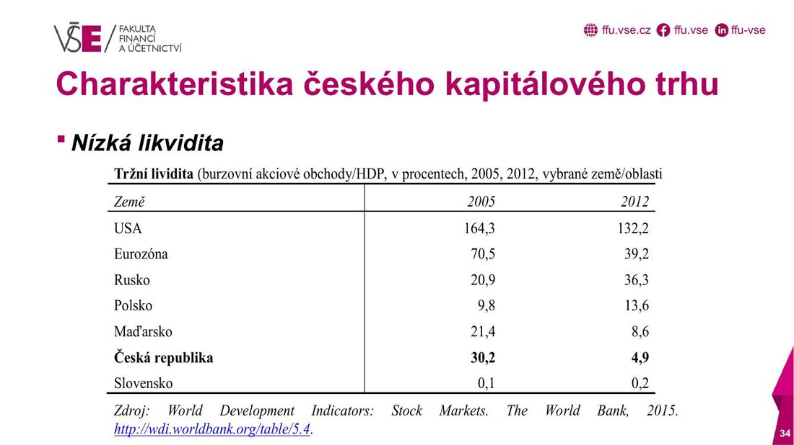
Finanční aktiva domácností
Slajdy 13–18 ukazují, z čeho se skládají finanční aktiva domácností v USA, Rakousku, Švédsku, Španělsku, Polsku a ČR (OECD, MFČR). Co si odnést (s. 19):
- struktura se mezi zeměmi výrazně liší. Rakousko a ČR: domácnosti jsou rizikově averzní, převažují bankovní instrumenty (vklady),
- USA a Švédsko: převažují akcie, kolektivní investování a penzijní instrumenty.
| Země (2013) | Hotovost + depozita | Akcie | Penzijní fondy |
|---|---|---|---|
| USA | 12,95 % | 33,68 % | 26,95 % |
| Švédsko | 15,50 % | 36,61 % | 28,00 % |
| Rakousko | 41,68 % | 19,63 % | 6,19 % |
| Španělsko | 45,67 % | 24,48 % | 8,03 % |
| Polsko | 44,03 % | 21,45 % | 19,97 % |
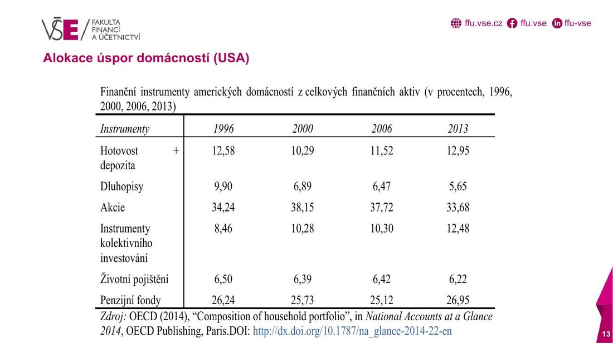
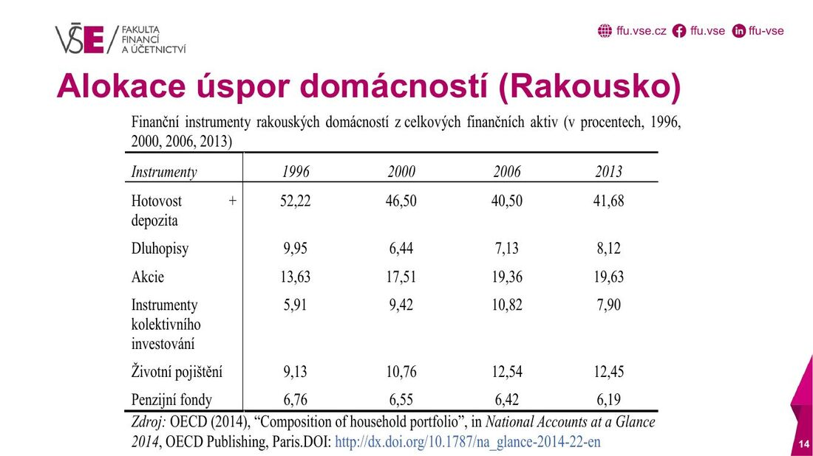
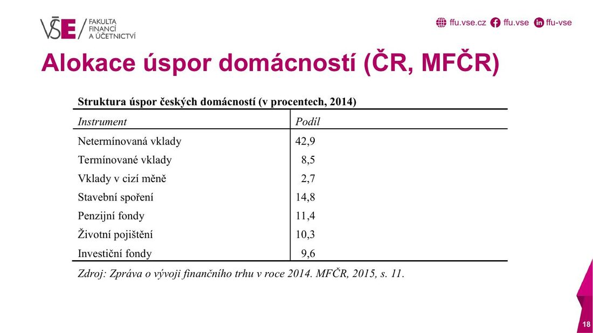
Vývoj v čase (s. 20, 25–27):
- před krizí 2007–2009 (Lehman) dlouhodobě rostl podíl akcií, kolektivního investování a penzijních instrumentů,
- po propuknutí globální finanční krize (GFK) podíl rizikovějších instrumentů, hlavně akcií, výrazně klesl (USA: akcie 37,72 % v 2006 → 28,80 % v 2008),
- při překonávání krize se podíl investičně-pojistných instrumentů postupně zvyšoval,
- Japonsko: bankovní depozita přes 50 % (s. 26), Itálie: velký podíl dluhopisů, 16 až 21 % (s. 27).
Proč se struktura aktiv domácností liší
Teorie struktury aktiv domácností (s. 22): Boersch-Supan a Eymann 1999, Starr-McCluer a Bertaut 2000, Campbell 2006, Wachter a Yogo 2010, Becker 2014. Důvody odlišností (s. 23–24):
- celkový majetek a příjem domácností,
- model důchodového systému,
- historická, aktuální a očekávaná výnosnost aktiv a riziko,
- likvidita,
- efektivní ochrana práv vnějších investorů,
- fáze životního cyklu domácností,
- investiční gramotnost,
- tradice, historické události a národní specifika.
Český kapitálový trh: stav
Slajdy 29–36 ukazují, že český trh dlouhodobě ztrácí na významu. Hlavní údaje:
| Ukazatel | Údaj | Slajd |
|---|---|---|
| Počet akciových emisí na BCPP | 1 670 (1996) → 151 (2000) → 32 (2006) → 23 (2014) | 29 |
| IPO na BCPP | 0 až 2 ročně (2004–2014), celkem 9 | 30 |
| IPO na WSE (Polsko) | 12 až 38 ročně (2008–2014) | 31 |
| Objem akciových obchodů na BCPP | 250 (1996), 849 mld. Kč (2006) → 154 mld. Kč (2014) | 32 |
| Podíl BCPP na akciových obchodech | asi 97 až 98 %, zbytek RM-S (2012–2014) | 33 |
| Tržní likvidita | 30,2 % → 4,9 % HDP (2005 → 2012) | 34 |
| Investiční certifikáty a warranty (2014) | slabý zájem, warranty 4 obchody za rok | 35, 36 |

Příčiny nerozvinutosti českého kapitálového trhu
Osm příčin ze s. 37, vhodné pro esej nebo ústní zkoušku:
- neúplnost trhu: téměř neplní emisní funkci,
- složité kapitálové zákonodárství,
- minimální informační (cenotvorná) role,
- nedostatečná ochrana vnějších investorů,
- všeobecný nezájem o kapitálový trh,
- nedostatečná role domácích portfoliových investorů,
- neúměrně vysoká riziková averze přebytkových jednotek (domácností),
- nepříznivý dopad GFK.
Opatření a snahy o rozvoj
- Neúspěšné úsilí (s. 38): projekt KCP a BCPP z roku 2004. Cíle: podpora emisí, privatizace státních podniků přes burzu, lepší infrastruktura, výhodnější zdanění fondů, posílení penzijního připojištění, kvalitní právní rámec.
- Nezbytná opatření (s. 39–41): privatizace státních podílů přes domácí kapitálový trh, efektivní dohled s ochranou vnějších investorů, hospodářská politika bez státního dirigismu, přitažlivý dohled ČNB, daňové stimuly pro správu aktiv v ČR, vícepilířová penzijní reforma s významným podílem kapitalizace a mezinárodně atraktivní zdanění výnosů.
- Aktuální úsilí (s. 42): kritická zpráva Světové banky 2017, Koncepce rozvoje českého kapitálového trhu 2019–2023, účet dlouhodobých investic (v době slajdu legislativní proces).
Doplněk: účet dlouhodobých investic z s. 42 byl později zaveden (DIP, zákonná úprava platí od roku 2024). Nejde o údaj ze slajdů, ověř v aktuálním znění zákona.
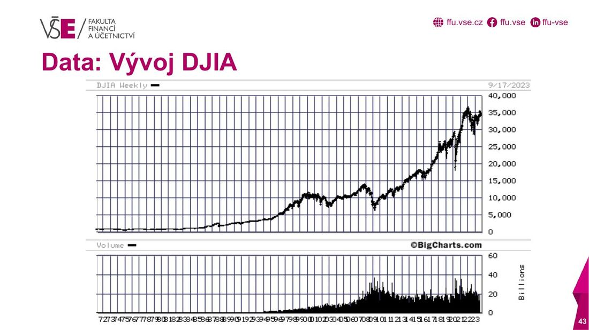
Projekt (zadáno na 1. přednášce, mimo slajdy)
- Teorie: Markowitz 1952 (portfolio), Sharpe 1964 (CAPM), Fama 1965 (efektivní trh), Tversky a Kahneman 1979 (behavioral finance).
- Alokace úspor: zprostředkovatelé, kapitálový trh, sekuritizovaný úvěrový trh. Funkce kapitálového trhu: alokační, cenotvorná, likviditní, diverzifikační, výkon vlastnických práv.
- Rozlišuj kapitalizaci / HDP (hloubka), obrat / kapitalizace (míra obratu) a obchody / HDP (likvidita).
- Domácnosti v Rakousku a ČR drží hlavně bankovní instrumenty, v USA a Švédsku akcie a penzijní fondy. Po GFK klesl podíl akcií.
- Český trh: pokles emisí (1 670 → 23), objemu obchodů a likvidity (4,9 % HDP v 2012), skoro žádná IPO, zatímco Polsko má desítky.
- Příčiny: neplnění emisní funkce, slabá ochrana investorů, rizikově averzní domácnosti, málo domácích institucí. Řešení: privatizace přes trh, dohled, daně, penzijní reforma.
2. Regulace a dohled nad kapitálovým trhem
Přednáška 1. 10. (odhad) · P. Musílek · zdroj: Regulace trhu cenných papírů (1BP404_02_prednaska.pptx, čísla slajdů v závorkách)
Důvody a cíle regulace
- Důvody: (1) tržní selhávání: informační asymetrie, šíření záporných externalit, monopolizace trhu; (2) výskyt nepoctivých praktik (s. 2).
- Cíle: podpora transparentnosti, zabezpečení důvěryhodnosti a ochrana investorů (s. 4).
- Prvky regulace (s. 5): regulace vstupu do odvětví, regulace informačních povinností emitentů a poskytovatelů investičních služeb, regulace nepoctivých praktik.
Nepoctivé praktiky
Nejrozšířenější podle přednášky (s. 6): obchody na základě neveřejných informací, obcházení regulace, zneužívání svěřeného majetku, konflikt zájmů mezi vlastními a cizími obchody, manipulace tržních cen.
doplněk (obecná literatura, Musílek 2011 kap. 5): obchod s neveřejnou informací = insider trading; obchod makléře na vlastní účet před velkým pokynem klienta = front running. V EU zneužívání trhu zakazuje nařízení MAR (596/2014).
Harmonizace: IOSCO
IOSCO (International Organization of Securities Commissions) usiluje o mezinárodní harmonizaci regulace, podmínek fungování investičních firem a informačních povinností emitentů. Cíle: spolupráce pro vysoký standard regulace, výměna zkušeností, sjednocení dohledu nad přeshraničními obchody a vzájemná pomoc při vynucování pravidel (s. 7).
Institucionální uspořádání dohledu
Teorie nepřinesla důvod, který by určil „ideální“ model. Ve vyspělých státech existují čtyři základní modely (s. 9–17):
| Model | Hlavní výhody | Hlavní nevýhody |
|---|---|---|
| Jednotný dohled (s. 10–11) | řeší překrývání kompetencí a mezery u finančních supermarketů; konsolidovaný dohled; úspory z rozsahu a sortimentu; centrální banka se věnuje jen měnové politice a chrání si reputaci | komplikovaná integrace odlišných přístupů; financování ze státního rozpočtu (horší platy než na trhu); nástroje pro finanční stabilitu jsou mimo centrální banku, dražší koordinace; politický tlak |
| Odvětvový (s. 12–13) | specializace; jasná odpovědnost; konkurence přístupů; diverzifikace selhání dohledu | neodpovídá prolínání segmentů; neefektivní dohled nad konglomeráty; vysoké náklady na koordinaci; regulatorní arbitráž; vícenásobný dohled nad supermarkety |
| Dohled v rámci centrální banky (s. 14–15) | vlastní financování nezávislé na rozpočtu; využití infrastruktury a informačních toků centrální banky; úspory z rozsahu; atraktivnější zaměstnavatel; náhrada kompetencí při vstupu do měnové unie | konflikt zájmů měnové politiky a dohledu (zvlášť v krizi); rozptýlený management; banka je účastníkem dluhopisových trhů, které dohlíží; koncentrace moci mimo kontrolu vlády; morální hazard (klienti čekají ochranu jako u vkladů) |
| Funkcionální (s. 16–17) | odpovídá stírání hranic segmentů; nízké náklady tržních subjektů; vyšší specializace; vyvážený důraz na ochranu spotřebitele a stabilitu; netřeba integrovat instituce | překrývání kompetencí; vyšší náklady než u jednotného modelu; koordinace; přesun regulace na zahraniční instituce; málo zkušeností (teoretický model) |
Konsolidace regulace a ESFS
Po krizi se regulace konsoliduje v rámci G-20, Financial Stability Board a Evropského systému dohledu finančního trhu (ESFS) (s. 18).
- ESRB (Evropská rada pro systémová rizika): bez právní subjektivity, monitoruje stabilitu systému jako celku, vysílá včasná varování a doporučení, úzce propojena s ECB (s. 20).
- EBA (banky; původně Londýn, nyní Paříž), ESMA (cenné papíry a trhy; Paříž), EIOPA (pojišťovnictví a zaměstnanecké penze; Frankfurt) (s. 21).
- Tyto orgány mají vlastní právní subjektivitu: navrhují regulační a prováděcí technické normy, vydávají pokyny a doporučení, koordinují národní úřady i kolegia dohledů, omezují regulatorní arbitráž. Výlučný dohled mají ve vybraných oblastech (ESMA: ratingové agentury) (s. 22).
- Společný výbor evropských orgánů dohledu a Odvolací senát (s. 23).
Národní dohledové úřady si ponechávají běžný každodenní dohled. Výjimkou je krize, kdy mohou některé operativní pravomoci přejít na evropské instituce (s. 24).
Právo a finance (La Porta, López-de-Silanes)
Kvalitní právní prostředí je základem fungujících trhů cenných papírů (1998). Špatné právo vede k vysoké koncentraci vlastnictví a nerozvinutým trhům. Bez účinného vynucování soukromou nebo soudní cestou je pravděpodobně nutný nezávislý regulátor s pravomocemi soudů (s. 25).
Vyvlastnění menšinových akcionářů má čtyři formy: zcizení zisku a aktiv; prodej aktiv spřátelené firmě pod tržní cenou; přeplácení manažerů; dosazování spřátelených a nekvalifikovaných osob do správních orgánů.
Regulace a dohled v ČR
- Vývoj dohledu (s. 26): od 1993 Ministerstvo financí (odbor 10, jako dozorový i správní orgán) → únor 1997 Úřad pro cenné papíry → 1. 4. 1998 Komise pro cenné papíry → od 1. 4. 2006 ČNB (KCP fungovala do 31. 3. 2006).
- Zákony (s. 27): o dohledu nad kapitálovým trhem (1998), o cenných papírech (1992), o podnikání na kapitálovém trhu (2004), o investičních společnostech a investičních fondech (2013), o dluhopisech, o bankách (1992) a vyhlášky.
- Role ČNB: posiluje důvěru investorů a emitentů, chrání investory, rozvíjí trh a podporuje osvětu (s. 27).
- Nástroje ČNB (s. 28): licence, povolení a předchozí souhlasy a kontrola jejich podmínek; získávání a ověřování informací; kontrola plnění povinností (včetně informačních a zákazu využívat důvěrné informace); rozhodování o právech a povinnostech; předběžná opatření; opatření k nápravě a sankce včetně pokut.

- Důvody regulace: tržní selhávání (informační asymetrie, externality, monopol) a nepoctivé praktiky. Cíle (IOSCO 1998): ochrana investorů, spravedlivé a transparentní trhy, omezení systémového rizika.
- Regulace = pravidla (primární zákony, sekundární vyhlášky a metodiky), dohled = kontrola a vynucování.
- Čtyři modely dohledu: jednotný, odvětvový, v centrální bance, funkcionální. Ke každému znát hlavní výhodu a nevýhodu (konflikt cílů u centrální banky, arbitráž u odvětvového, překryvy u funkcionálního).
- ESFS: ESRB (systémová rizika, varování) + EBA, ESMA, EIOPA (vlastní právní subjektivita, technické normy, ESMA dohlíží na ratingy) + národní úřady.
- ČR: MF (1993) → Úřad pro cenné papíry (1997) → Komise pro cenné papíry (1998) → ČNB (od 1. 4. 2006).
- Nástroje ČNB: licence, informace, kontrola, předběžná opatření, nápravná opatření a pokuty.
3. Instrumenty kolektivního investování
Přednáška 8. 10. (odhad) · P. Musílek · zdroj: Instrumenty kolektivního investování (1BP404_03A_prednaska.pptx, čísla slajdů v závorkách); doplňky označené jako doplněk: Musílek (2011) kap. 21–23 a obecná literatura
Geneze kolektivního investování
- 1774 spolek „Svornost vytváří sílu“ (první fond, doplněk: Nizozemsko), 1924 první otevřený fond (doplněk: Massachusetts Investors Trust v USA) (s. 3).
- Boom v 90. letech a na počátku 21. století. V transformujících se zemích byla KI součástí privatizace (s. 3).
- Objem světových aktiv fondů vzrostl z 9,6 bil. USD (1998) na 40,4 bil. USD (2016), tedy 4,2krát. Česko z 0,6 na 9 mld. USD (15krát) (s. 4–6).
- Počet otevřených fondů ve světě: 22 tis. (1992), 53 tis. (2000), 110 tis. (2016). Nejvíc jich je v Lucembursku (14 tis.), USA, Koreji a Japonsku (s. 7–10).
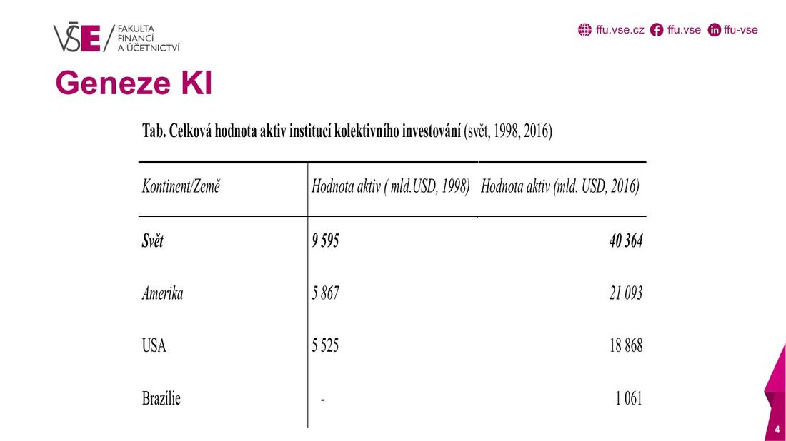
Důvody boomu a rizika
- Důvody (s. 11): výnos, riziko a likvidita; profesionální správa úspor; diverzifikace; nízké náklady; nabídka investičních strategií; sociální odpovědnost domácností (stát přenáší péči o důchod na jednotlivce); jednoduchost a flexibilita.
- Rizika (s. 12): tržní riziko (hodnota podílu kolísá); neexistují garanční systémy (vklady jsou pojištěné, fondy ne), existuje však depozitář, který majetek fondu střeží odděleně od správce; konflikt zájmů mezi investorem a správcem portfolia.
Institucionální uspořádání
Fondy se člení podle (s. 13): investiční × podílový model, uzavřený × otevřený model, předmět investování, způsob rozdělování výnosů (doplněk: růstové × dividendové fondy) a investiční strategie (aktivně × pasivně spravované fondy).
Otevřené a uzavřené fondy

- NAV = (520 − 20) / 10 = 50 Kč (závazky se odečítají).
- Diskont = (42 − 50) / 50 = −16 %, dělí se NAV, ne cenou.
ETF

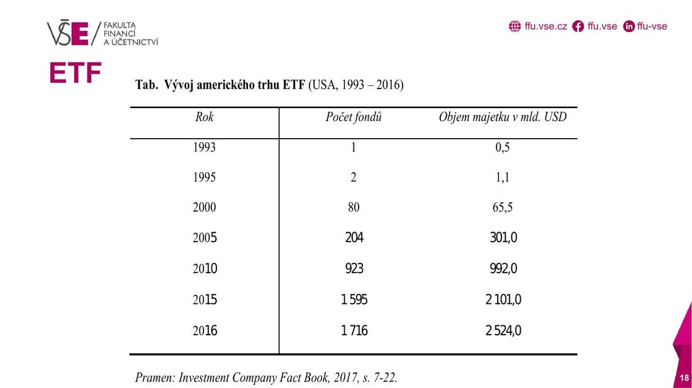
Hedgeové fondy

Regulace HF po krizi
- USA (Dodd-Frank Act, s. 21–22): správci HF a privátních fondů se musí registrovat. Nad 150 mil. USD u SEC, 25–150 mil. USD na státní úrovni. Výjimky: zahraniční správci s málo klienty v USA, správci rizikového kapitálu a rodinných fondů. Registrovaní i neregistrovaní správci musí sbírat a předávat dohledu údaje (aktiva, zadlužení, riziko protistran).
- EU (směrnice o správcích alternativních investičních fondů, AIFMD, s. 23–24): povolení správce (bez povolení jen fondy do 100 mil. EUR, nebo do 500 mil. EUR, pokud nepoužívají páku a zpětný prodej je delší než 5 let); nabízení jen profesionálním investorům; nezávislý oceňovatel; kapitálové požadavky; řízení rizik; reporting a hlášení pákových pozic; povolení pro fondy ze třetích zemí.
České kolektivní investování: ZISIF
- Rozsah (s. 27): zákon se nevztahuje jen na veřejnost, ale i na společné investování několika málo společníků. Pod 100 mil. EUR stačí registrace, nad 100 mil. EUR je nutná licence. Nevztahuje se na holdingy, správu rodinného majetku, důchodové, účastnické a penzijní fondy.
- Nová klasifikace (s. 27): místo „investiční × podílové fondy“ jsou fondy kolektivního investování (standardní a speciální) a fondy kvalifikovaných investorů.
- Kolektivní investování (s. 28): shromažďování peněz od veřejnosti vydáváním akcií investičního fondu nebo podílových listů, společné investování podle strategie a rozložení rizika.
- Investiční fond (s. 28): akcie jsou veřejně obchodovatelné, převoditelnost nelze omezit, zakládá se na dobu určitou (uvedenou ve statutu). Nově investiční společnost s proměnným základním kapitálem (a.s., jejíž akcionář má právo na odkup akcií). Majetek spravuje sám, nebo ho svěří investiční společnosti.
- Administrátor × obhospodařovatel (s. 29): činnosti lze rozdělit mezi různé instituce. Pro depozitáře platí odlišné požadavky podle typu fondu.
- Podílový fond (s. 30): zřizuje ho investiční společnost jako otevřený nebo uzavřený. OF: podílník má právo na odkup, lhůta u standardního fondu max. 2 týdny. UF: nové fondy jen na dobu určitou (povoluje ČNB).
| Lhůta odkupu podílu (s. 30) | Maximum |
|---|---|
| standardní fond | 2 týdny od žádosti |
| speciální fond | 1 měsíc |
| fond kvalifikovaných investorů | 1 rok |
| nemovitostní fond | 2 roky |
Standardní a speciální fondy
| Standardní fond (s. 32–33) | Speciální fond (s. 34) | |
|---|---|---|
| Definice | splňuje právo EU a je v seznamu ČNB (UCITS), lze nabízet v celé EU | nesplňuje požadavky práva EU a není v seznamu ČNB |
| Forma | jen otevřený fond | otevřený i uzavřený |
| Investice | investiční cenné papíry, nástroje peněžního trhu, IPO, max. 10 % portfolia v cenných papírech jiného standardního fondu, spec. fondy, deriváty, vklady do 1 roku | investiční cenné papíry, peněžní trh, deriváty, nemovitosti a účasti v nemovitostních společnostech (oceňují znalci) |
| Limit na jednoho emitenta | 5 % portfolia | 20 % portfolia |
| Výjimky | až 10 % u 40 % portfolia; veřejný sektor 35 %; bankovní dluhopisy jednoho emitenta 25 % | bankovní dluhopisy 25 %; veřejný sektor 35 %; 1 nemovitost max. 20 %, 1 účast v nemovitostní společnosti max. 30 % |
Pravidla investování jsou přísnější u standardních fondů (s. 32).
Fondy kvalifikovaných investorů (FKI)
- Podle úpravy z roku 2013 nejsou součástí kolektivního investování (s. 35).
- Kvalifikovaný investor: finanční instituce, právnická nebo fyzická osoba, která prohlásí ochotu přijmout rizika strategie. Minimální investice 125 tis. EUR (s. 35).
- Právní formy (s. 36–39): právnická osoba se sídlem v ČR, podílový fond, svěřenský fond, kvalifikovaný fond rizikového kapitálu a sociálního podnikání. Celkem může jít jen o podílový fond, svěřenský fond, k.s., s.r.o., a.s., evropskou společnost nebo družstvo.
- Investiční limity (s. 40): FKI s kapitálem do 100 mil. EUR bez zajištěné diverzifikace nesmí dát více než 30 % portfolia do cenných papírů jednoho druhu od jednoho emitenta nebo do jedné komodity. Nemovitost smí v okamžiku nákupu tvořit max. 30 % portfolia.
UCITS IV a novela ZoKI
- Směrnice UCITS IV (2009) zjednodušuje přeshraniční aktivity fondů, umožňuje konsolidaci evropského trhu a zlepšuje informovanost investorů. Do českého zákona transponována novelou č. 188/2011 Sb. (s. 41).
- Master-feeder (řídící–podřízený fond, s. 42): podřízený standardní fond investuje alespoň 85 % majetku do cenných papírů řídícího fondu (cíl: pooling majetku).
- Uzavřené fondy (s. 42): lze zakládat i na dobu neurčitou, ale s povinností odkupu po 10 letech od vzniku a pak aspoň každých 24 měsíců. Statut může dát právo na odkup (polootevřený fond).
- Přísnější pravidla pro investiční společnosti; efektivnější služební a produktový pas (s. 42–43).
- KII (klíčové informace pro investory, od 7/2012, s. 43): investiční cíl, způsob investování, historická výkonnost, náklady a poplatky. Dostanou je písemně investoři standardních i speciálních fondů (elektronicky jen se souhlasem klienta). Nahrazují nepřehledné zjednodušené prospekty.
| Fond (vyhláška č. 193/2011 Sb., s. 43) | Zbytková splatnost jednoho cenného papíru | Vážená průměrná životnost majetku |
|---|---|---|
| krátkodobý fond peněžního trhu | max. 397 dní | max. 120 dní |
| fond peněžního trhu | max. 2 roky | max. 12 měsíců |
Tržní vývoj a struktura v ČR
- Majetek v tuzemských OPF: 173 mld. Kč (2007), pokles na 121 (2008) a 117 mld. (2009) po globální krizi. Zahraniční fondy držené tuzemci: 142 → 123 → 117 mld. Kč. Od 2012 výrazný růst, konec 2016 asi 432 mld. Kč (domácí 236,5 + zahraniční 195,5) (s. 44).
- Počet subjektů 2003 → 2020: investiční společnosti 15 → 39, investiční fondy s právní osobností 4 → 183, podílové fondy 66 → 237, zahraniční fondy s evropskou licencí 723 → 1 503 (s. 31, 45).

- KI vzrostlo ve světě 1998–2016 čtyřnásobně na 40,4 bil. USD; důvody: diverzifikace, profesionální správa, nízké náklady. Rizika: tržní, bez garančního systému (je depozitář), konflikt zájmů.
- Otevřený fond odkupuje podíly, uzavřený ne. V USA dnes výrazně převažují otevřené fondy.
- ETF × indexovaný fond: ETF se obchoduje průběžně, má short selling, margin a tracking error 5 bp (indexový fond 20–30 bp).
- HF po krizi: USA registrace u SEC nad 150 mil. USD; AIFMD povolení správců, jen pro profesionály, nezávislý oceňovatel.
- ZISIF 240/2013: registrace pod 100 mil. EUR, licence nad; standardní fond (UCITS, jen otevřený, 5 % na emitenta), speciální fond (20 %), FKI (min. 125 tis. EUR, mimo KI).
- Odkup: standardní 2 týdny, speciální 1 měsíc, FKI 1 rok, nemovitostní 2 roky. Master-feeder 85 %, KII od 7/2012.
- Trh ČR 9/2020: 559 mld. Kč, nejvíc smíšené fondy, vedou ČS, ČSOB, KB.
4. Dluhové instrumenty
Přednáška 15. 10. (odhad) · doc. Stádník · zdroj: Dluhové instrumenty (1BP404_09_prednaska.pptx, s. 1–54; prezentace v šabloně P. Musílka, autor není na slajdech uveden jinak)
Postavení dluhových trhů (s. 3–5)
Dluhopisové trhy jsou v rozvinutých zemích větší než akciové: v USA byla roku 2008 tržní hodnota dluhopisů 30 658 mld. USD proti kapitalizaci akcií 11 738 mld. USD, v eurozóně 23 793 proti 4 985 mld. USD (s. 3–4). Ve světě to bylo 83 529 mld. USD dluhopisů, 33 513 mld. akcií a 97 381 mld. bankovních aktiv. V emerging markets je naopak poměr vyrovnanější (7 815 dluhopisy, 8 559 akcie).

Struktura dluhových trhů (s. 5): peněžní trhy (krátkodobé dluhové instrumenty: státní pokladniční poukázky, depozitní certifikáty, komerční papíry) a dluhopisové trhy (dluhopisy veřejného sektoru, bankovní a podnikové).
Dluhopis a emisní prospekt (s. 6–9)
- Co prospekt obsahuje (s. 7–8): emitent; měna (domácí, zahraniční dluhopis, eurodluhopis); hodnota; rozdělení emise; forma důchodu (straight bond, FRN, zero bond); doba životnosti; termín a forma upsání; emisní kurs; metody splacení; záruky; svěřenecká jistota; forma obchodů.
- Metody splacení (s. 8): umořovací plán, sinking fund (umořovací fond), purchase fund (povinnost zpětného odkupu), výpověď (call bond = emitent může předčasně splatit, put bond = investor může požádat o předčasné splacení).
- Zvláštní druhy (s. 9): indexované dluhopisy (bull and bear bond), svlečený dluhopis (stripped bond: kupóny a jistina se obchodují zvlášť), prašivý (junk bond), konvertibilní, opční (s warrantem) a hypoteční zástavní listy.
Hodnota dluhopisu (s. 10)
Doplněk (Musílek 2011, kap. 20; slajdy dál nerozvádějí): když sazby rostou, cena dluhopisu klesá. Kupón vyšší než požadovaný výnos znamená cenu nad nominálem, nižší znamená cenu pod nominálem.
Doplněk (Musílek 2011): modifikovaná durace udává přibližnou změnu ceny při změně výnosu: $\frac{\Delta P}{P} \approx -D_{mod}\cdot\Delta r$. Při $D_{mod}=6$ a růstu výnosu o 0,5 p. b. cena klesne zhruba o 3 %. Delší splatnost a nižší kupón znamenají vyšší duraci.
Doplněk: konvertibilní dluhopis lze vyměnit za akcie emitenta (dluh zaniká), opční dluhopis má oddělitelný warrant na dokoupení akcií (dluh trvá). Oba mají nižší kupón než běžný dluhopis. Junk bond je dluhopis s ratingem pod investičním stupněm (viz níže).
Ratingové agentury (s. 11–16)
- První agentury vznikly v polovině 19. století a původně hodnotily jen bonitu emitentů dluhových papírů. Trh má oligopolní charakter: ovládají ho tři globální agentury, Moody’s, Standard & Poor’s a Fitch (s. 11).
- Moody’s: založil John Moody 1909, téměř 40 % světového trhu, kótována na NYSE, významní vlastníci Berkshire Hathaway a Davis Selected Advisers (s. 12).
- S&P: nejstarší agentura (1860, H. V. Poor, History of Railroads and Canals), tvoří také akciové indexy, divize Capital IQ, od 2016 S&P Global (s. 14).
- Fitch: založil J. K. Fitch 1913, centrály New York a Londýn, 1997 spojení s IBCA, 2000 převzetí chicagské agentury Duff and Credit Rating Co. (název podle slajdu) a ThomsonBankWatch (s. 16).
Rating: princip (s. 18–21)
- Issuer-pays: agentura je placena emitentem, který usiluje o co nejlepší rating, protože vysoký rating zlevní kapitál. Je to flexibilní, ale vzniká závislost agentury na provizích a konflikt zájmů (s. 19).
- Investor-pays: dřívější model, analýzu zadával investor. Byl časově i finančně náročný (s. 20).
- Zvlášť se hodnotí dlouhodobé závazky (dluhopisy) a krátkodobé (komerční papíry, depozitní certifikáty). K ratingu patří výhled (pozitivní, stabilní, negativní). Stupnice se dělí na investiční a neinvestiční stupeň. Split rating = rozštěpený rating, kdy se agentury v hodnocení liší (s. 21).
Ratingové stupnice (s. 22–28)
| Skupina (s. 22–25) | Moody’s | S&P | Význam |
|---|---|---|---|
| Investiční: 1. vysoký stupeň | Aaa | AAA | nejvyšší kvalita, velmi vysoké úrokové krytí |
| Aa | AA | vysoká kvalita, krytí nižší než u první skupiny | |
| Investiční: 2. průměrný stupeň | A | A | vyšší střední kvalita |
| Baa | BBB | přiměřená schopnost splácet, změna podmínek ji může výrazně snížit | |
| Neinvestiční: 3. spekulativní | Ba | BB | spekulativní prvky, budoucí plnění nejisté |
| B | B | dlouhodobé plnění nejisté | |
| Neinvestiční: 4. promeškaný | Caa | CCC | nízká kvalita, nebezpečí nesplacení |
| Ca | CC | vysoce spekulativní emise | |
| C | C | většina plateb bude v prodlení | |
| – | D | všechny platby v prodlení; NR = rating nevydán |
Krátkodobý rating: Moody’s P-1, P-2, P-3, jinak NP (neinvestiční) (s. 26). S&P A-1, A-2, A-3, dále B, C, R (zvláštní finanční režim), SD/D (selektivní/úplná platební neschopnost) a NP (nehodnoceno) (s. 27–28).
Rating a finanční ukazatele, příklad Chrysler (s. 29–33)
Čím horší rating, tím horší ukazatele: úrokové krytí klesá z 7,48 (AAA) na 0,75 (CCC), poměr dlouhodobého dluhu k vlastnímu jmění roste z 8,9 % na 69,3 % (S&P 1983–85, s. 29).

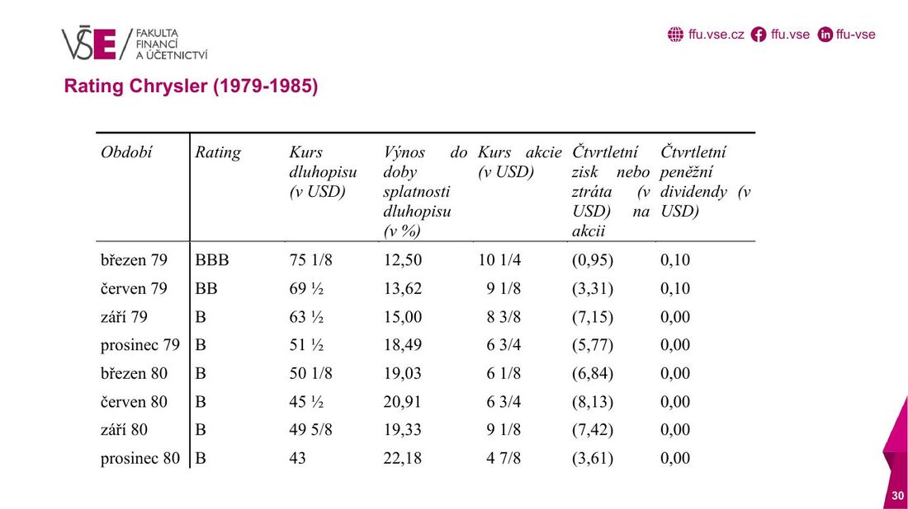
Role a efektivnost ratingu (s. 34–37)
Přínosy ratingu (s. 34–35): snadné měření relativního bonitního rizika, levnější správa aktiv (institucionální investoři nemusí dělat vlastní analýzy), umožnění sekuritizovaných a strukturovaných produktů, lepší risk management investičních firem a regulatorní role v Basel II (kapitálová přiměřenost).
Efektivnost (s. 36–37): starší výzkumy (Horrigan 1966, Pogue a Soldofsky 1969, Pinches a Mingo 1973) ukázaly, že agentury riziko emitentů hodnotily správně. Nižší rating a delší splatnost znamenají vyšší podíl nesplacených emisí.

Selhání ratingu strukturovaných produktů (s. 38–43)
U podnikových dluhopisů rating fungoval, u strukturovaných produktů se ukázal jako velmi nespolehlivý (s. 38). V roce 2007 bylo sníženo jen 1,0 % produktů s AAA, v roce 2008 už 23,4 %; u CCC 34,9 % a 78,5 % (s. 39–40).
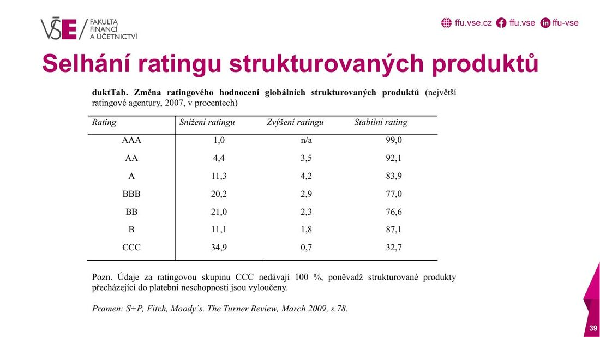
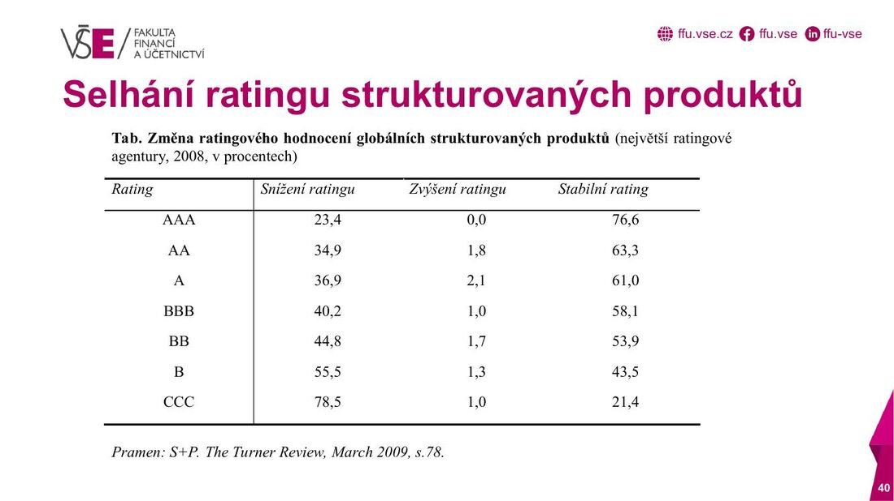
Příčiny selhání (s. 41–43):
- snížení ratingu AIG spustilo výprodej strukturovaných produktů, ceny a likvidita se zhroutily; rating přitom hodnotí jen platební schopnost, ne tržní riziko a nelikviditu,
- krátké časové řady dat o strukturovaných produktech,
- nadměrné spoléhání na statisticko-matematické metody,
- konflikt zájmů mezi ratingem a poradenstvím,
- procyklický efekt ratingu,
- selhání etiky: chyběly „čínské zdi“ mezi poradenstvím a ratingem, zaměstnanci byli zainteresováni na co největším počtu ratingů placených emitenty, existovalo netransparentní propojení s lukrativními klienty (s. 43).
Regulace ratingových agentur (s. 45–54)
- Před krizí: IOSCO vydala 2004 Code of Conduct Fundamentals for CRAs, který měl jen doporučující charakter (kvalita a integrita ratingu, nezávislost, předcházení konfliktu zájmů) (s. 45).
- Po krizi (GFK): agentury jsou zařazeny do standardní regulace a dohledu. Samy přijaly kodexy: S&P zřídila ombudsmana, nezávislý interní audit a rotaci analytiků; Fitch oddělila poradenství do zvláštní divize (s. 46).
- USA (s. 47–48): Credit Rating Agency Reform Act (2006) uložil SEC určit pravidla pro statut NRSRO a regulovat vnitřní procesy (konflikt zájmů), ale zakázal SEC dohlížet na metodologii ratingu. Dodd-Frank Act (část 9) rozšířil pravomoci SEC a uložil agenturám informační povinnosti (zprávy o interní kontrole, zveřejňování úspěšnosti ratingu, odkrytí metodologie) a kontrolní mechanismy.
- EU (s. 49–54): nařízení o ratingových agenturách (2009), účinné od října 2009. Cíle: nezávislost, omezení střetu zájmů (zákaz poradenství hodnoceným osobám, rotace analytiků), interní kontrola (nezávislí členové orgánů, oddělení compliance), kvalita a roční zpráva o transparentnosti, pravidla pro užití ratingů v regulaci, informační povinnost, registrace (licenční režim), standardní dohled a jednotný evropský trh ratingů bez další notifikace v členských státech.
- Termíny EU (s. 53–54): žádost o registraci do září 2010; od prosince 2010 smějí finanční instituce pro regulaci používat jen ratingy agentur registrovaných v EU. Od 2011 má výlučný dohled ESMA (navrhuje regulační technické normy pro Komisi). Další opatření: omezení používání ratingů finančními institucemi, transparentnější ratingy vládních dluhů, povinná rotace agentur alespoň jednou za 3 roky, vyšší odpovědnost agentur.
Jak poznat správnou odpověď v testu
- „Kdo platí agenturu?“ → v převažujícím modelu issuer-pays, proto konflikt zájmů.
- Rating dobře seřadil emitenty podle rizika (tab. s. 37), ale selhal u strukturovaných produktů.
- SEC nesmí regulovat metodologii; v EU dohlíží ESMA a agentury se střídají po 3 letech.
- Nejnižší investiční stupeň je BBB / Baa.
- Dluhopisový trh je ve vyspělých zemích větší než akciový; dluhové trhy dělíme na peněžní a dluhopisové.
- Dluhopis = právo na splacení dluhu; podmínky určuje emisní prospekt. Hodnota = současná hodnota budoucích příjmů.
- Trh ratingu ovládají Moody’s, S&P a Fitch; převládá issuer-pays s rizikem konfliktu zájmů.
- Stupnice: investiční AAA až BBB, neinvestiční BB až D; krátkodobě P-1 až P-3 (Moody’s) a A-1 až A-3 (S&P).
- Rating dobře řadí riziko (KPN roste s horším ratingem i délkou období), selhal u strukturovaných produktů 2007–2008.
- Regulace: IOSCO 2004 (doporučení), USA CRA Reform Act 2006 a Dodd-Frank, EU nařízení 2009 a dohled ESMA (2011).
5. Penzijní fondy a investiční management
Přednáška 22. 10. (odhad) · P. Musílek · zdroj: Penzijní fondy (1BP404_03B_prednaska.pptx, 18 slajdů), České penzijní finance (1BP404_03C_prednaska.pptx, 44 slajdů), Investiční management (1BP404_04_prednaska.pptx, 22 slajdů); odkazy: 03B s. N, 03C s. N, 04 s. N. Doplněk = Musílek (2011) kap. 16–17, 24–25 a obecná literatura (slajdy ho neobsahují). Po přednášce konzultace projektů.
Část A: Penzijní fondy
Role penzijních fondů a systémy financování důchodů
- Rozdíly v zemích jsou obrovské. Aktiva penzijních fondů v % HDP 2016: Nizozemsko 180, Kanada 159, USA 135, Velká Británie 95; ČR 8,4, Německo 6,8, Rakousko 6,9 (03B s. 3–4).
- Podíl příjmů z kapitalizovaných pilířů na důchodových příjmech (OECD 2008): Kanada 50,6 %, Nizozemsko 46,5 %, USA 45,1 %; průměr OECD 19,5 %; ČR 0,7 % (03B s. 5). Silné fondy = velcí dlouhodobí investoři a hluboký kapitálový trh, v ČR je to naopak.
- Demografie: ukazatel závislosti (poměr starých k lidem v produktivním věku) v EU-27 roste z 26 % (2010) na 53 % (2060), v ČR na 61 % (03B s. 7). Proto je průběžný systém dlouhodobě neudržitelný.
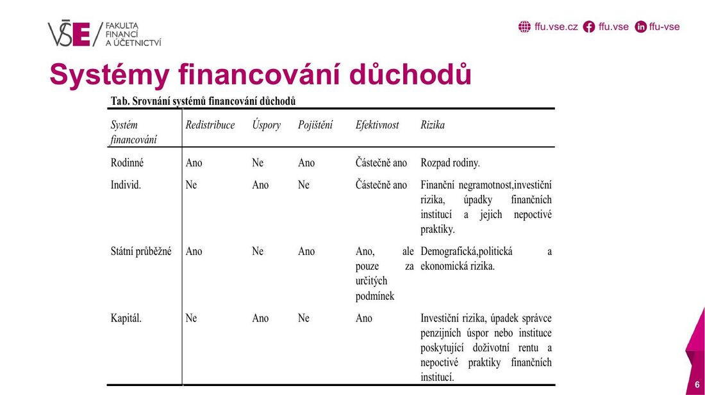
Institucionální uspořádání kapitalizovaných systémů
Tři osy (03B s. 9–12): správa (státní, zaměstnanecké, nezávislé penzijní fondy, PPP), forma účasti (dobrovolná × povinná), typ plánu: s definovaným příspěvkem (DC), s definovanou dávkou (DB), hybridní, plán zaměstnaneckého vlastnictví akcií.
Oblasti regulace (03B s. 13): obezřetnostní × detailní přístup, akumulační × výplatní fáze, investiční politika, systémy garancí (absolutní, relativní, garanční fondy, nabídka investičních strategií), regulace nákladů.
Investiční politika, výnosnost a náklady
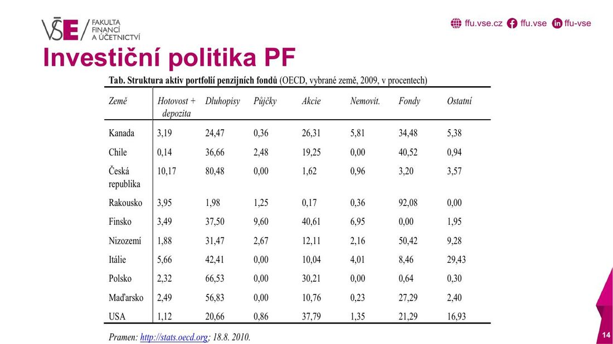
- V krizi 2008 měly penzijní portfolia reálně záporný výnos: průměr OECD −23 %, Irsko −37,5 % (03B s. 15). Veřejné rezervní fondy za 2005–2009 vydělaly nominálně 3,6–6,9 % p. a., reálně 1,7–4,1 % (03B s. 16, 03C s. 8).
- Operační náklady (% aktiv): Dánsko 0,2, Polsko 0,5, Kanada 1,1, Velká Británie 0,8, ČR 4,7 (2008) (03B s. 17). Veřejné rezervní fondy jen 0,03–0,25 % (výjimka Nový Zéland ~0,6–1,0; 03B s. 18).
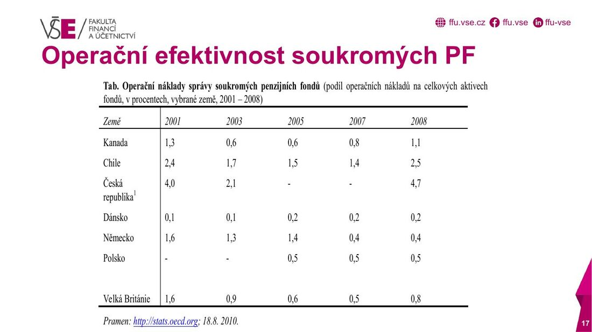
České penzijní připojištění (III. pilíř, stará úprava)
- Prostředky se umísťují s odbornou péčí (bezpečnost, kvalita, likvidita, rentabilita). Povolená aktiva: dluhopisy států OECD a mezinárodních institucí, podílové listy otevřených fondů, cenné papíry z regulovaných trhů OECD, nemovitosti (03C s. 3).
- Limity (03C s. 4): jeden emitent max. 10 % majetku (neplatí pro státní dluhopisy), rizikové nástroje max. 70 %, movité a nemovité věci max. 10 %, max. 20 % jmenovité hodnoty emise jednoho emitenta, min. 50 % majetku v měně závazků.
- Rozdělení zisku: min. 5 % do rezervních fondů, max. 10 % podle valné hromady, zbytek ve prospěch účastníků. Ztráta se kryje nerozděleným ziskem, rezervami, nakonec snížením kapitálu (ne pod 50 mil. Kč) (03C s. 9).
- Struktura portfolia: dluhopisy 86,7 % (2011), 88,7 % (2016), akcie 0,4 % (03C s. 5, 11). Účastníků: 4,6 mil. (2011), 4,0 mil. v transformovaných fondech (2016) (03C s. 10).
- Průměrný měsíční příspěvek účastníka 606 Kč a státní 124 Kč (2016) (03C s. 13). Akviziční náklady na novou smlouvu vzrostly z 1 592 Kč (2007) na 4 249 Kč (2011) (03C s. 15).

Odstranění institucionální chyby: DPS a účastnické fondy
- Vzniká nový pilíř. Starý (penzijní připojištění) se uzavírá pro nové vstupy a mění se na transformované fondy s garancí nulového výnosu. Přestup do nového systému je dobrovolný (03C s. 17–18).
- Účastnické fondy: princip kolektivního investování (UCITS), majetek fondů je oddělen od majetku penzijní společnosti (min. vlastní kapitál 50 mil. Kč), hodnota se vede v penzijních jednotkách v tržních cenách, bez garance. Každý účastník má osobní účet (peněžní a majetkový podúčet) (03C s. 17–18).
- Povinný konzervativní fond (pro účastníky s nárokem na penzi do 5 let). Oddělená spořicí a výplatní fáze. Účastnický fond nemá právní subjektivitu (03C s. 19).
- Regulace: úplata max. 0,4 % majetku u konzervativního fondu, 0,8 % u ostatních; akviziční náklady max. 3,5 % průměrné mzdy; ocenění nejméně týdně; Sdělení klíčových informací (03C s. 19).
- Státní příspěvek (stav slajdu): při příspěvku 300–900 Kč je to 90 Kč + 20 % z částky nad 300 Kč, od 1 000 Kč 230 Kč (03C s. 19).

Novela III. pilíře (účinnost 1. 1. 2016)
- DPS lze sjednat i nezletilým (po 18. roce výběr až 1/3), právo vybrat vše od 60 let (03C s. 20).
- Výplata penze alespoň 10 let → osvobození výnosů od 15% daně. Od 2017 daňová úleva až do 24 000 Kč ročně (max. výhody při 3 000 Kč měsíčně). Limit příspěvku zaměstnavatele osvobozený od odvodů 30 000 → 50 000 Kč ročně (03C s. 21–22).
- Úplata účastnických fondů (mimo konzervativní) 0,8 → 1 %, podíl na zhodnocení 10 → 15 %. U transformovaných fondů úplata 0,6 → 0,8 %, podíl na zhodnocení 15 → 10 %. Provize zprostředkovatelům 880 → 1 760 Kč (03C s. 22–23).
II. pilíř: důchodové spoření a jeho zrušení
- Zákon o důchodovém spoření (2013): dobrovolný vstup (do 35 let, starší do června 2013), účast definitivní, příspěvek 3 % z pojistného + 2 % navíc z vlastního (03C s. 24). Provozovat ho směla jen penzijní společnost (min. kapitál 500 mil. Kč, 50 tis. účastníků) (s. 26).
- Povinné důchodové fondy (03C s. 28–29) se stoupající rizikovostí: státních dluhopisů (DFSD), konzervativní (KDF), vyvážený (VDF), dynamický (DDF). Akcie a fondy max. 0 % / 0 % / 40 % / 80 %; úplata za správu 0,3 / 0,4 / 0,5 / 0,6 % z průměrného vlastního kapitálu.
- Centrální registr smluv a centralizovaný výběr (Jednotné inkasní místo) (03C s. 27). Druhy důchodů: doživotní, doživotní s pozůstalostním po dobu 3 let, na 20 let, sirotčí na 5 let (s. 30).
- Zrušení: zákon o ukončení důchodového spoření schválen 2015, spoření skončilo, povolení fondů zaniká 30. 6. 2016, fondy jdou do likvidace. Účastník volí: převod do III. pilíře (DPS / penzijní připojištění), výplatu na účet, převod 3 % zpět do státního systému (03C s. 32–33; s. 34–35 jsou fotky dopisů penzijní společnosti účastníkům).
Modernizace důchodového systému (Musílkův návrh)
- Multipilířový systém (03C s. 37–38): 0. pilíř rodinný, I. pilíř státní, II. pilíř povinný kapitalizovaný, III. pilíř dobrovolný kombinovaný. Cíl: diverzifikace rizik, fiskální stabilizace a domácí dlouhodobý kapitál.
- I. pilíř výrazně zredukovaný: rovné (jednotné) dávky ze státního rozpočtu bez ohledu na minulé výdělky, redistribuce i mezi bohatými a chudými, nízké náklady (s. 39).
- II. pilíř povinný (s. 40–43): řeší dopad demografie na veřejné finance a podporuje agregátní úspory a trh cenných papírů. Min. příspěvek 5 % příjmu, cíl 8–10 %. Nezávislé penzijní společnosti (nepropojené se zaměstnavateli, propojení s bankami a pojišťovnami je v pořádku). Penzijní fondy s definovaným příspěvkem, min. dva fondy: konzervativní a rizikový, případně podfondy podle životního cyklu.
- III. pilíř dobrovolný: penzijní připojištění, kolektivní investování, vklady, životní pojištění. Na začátku detailní regulace, po stabilizaci přechod k obezřetnostní (s. 44).
Část B: Investiční management
Moderní teorie portfolia (MTP) a převládající přístup
- Pilíře MTP (04 s. 4): teorie portfolia (Markowitz), CAPM (Sharpe, Lintner, Mossin), teorie efektivního trhu (Fama), mezinárodní investování (Solnik), a selhávání diverzifikace v globalizaci a krizích.
- Většina manažerů se řídí šesti principy (04 s. 5–11):
- nejdřív stanovit akceptovatelné riziko, které určuje alokace aktiv (nejdůležitější rozhodnutí),
- riziko se posuzuje na úrovni celého portfolia (příspěvek instrumentu k riziku portfolia, včetně lidského kapitálu a reálných aktiv),
- riziko roste s délkou horizontu (3 týdny v poukázkách × 30 let),
- diverzifikace snižuje riziko, doplněná půjčováním nebo půjčením bezrizikového aktiva,
- portfolio podle potřeb investora (znalosti, motivy, daně),
- konkurence vytváří rovnováhu: trhy jsou efektivní, nadvýnos po úpravě o riziko je obtížné získat.
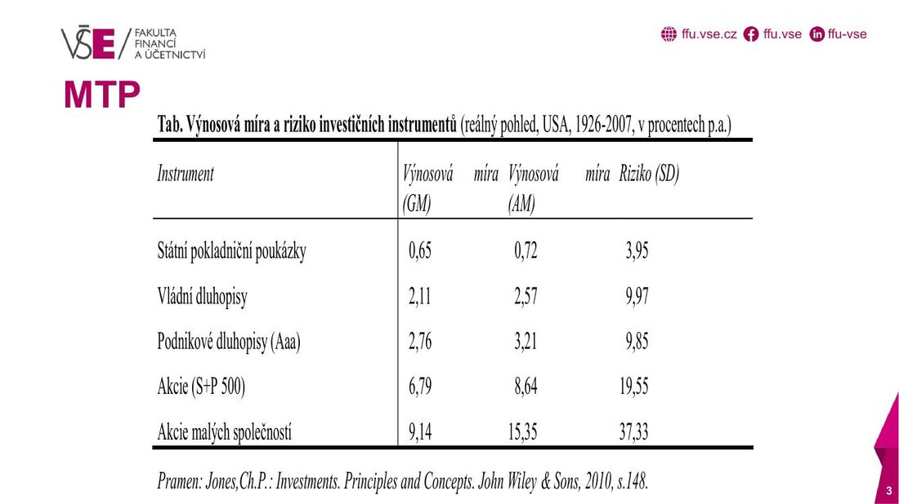
- akcie S&P 500: (8,64 − 0,72) / 19,55 = 0,41,
- akcie malých firem: (15,35 − 0,72) / 37,33 = 0,39 (víc výnosu, ale víc než dvojnásobné riziko, proto o málo horší),
- podnikové dluhopisy (3,21 − 0,72) / 9,85 = 0,25; vládní dluhopisy (2,57 − 0,72) / 9,97 = 0,19.
- Výnos = 0,5 · 10 + 0,5 · 6 = 8 %.
- Rozptyl = 0,25 · 0,04 + 0,25 · 0,01 + 2 · 0,25 · 0,2 · 0,2 · 0,1 = 0,0145.
- σp = √0,0145 = 12,0 % (vážený průměr rizik by byl 15 %). Diverzifikace odstraní jedinečné riziko, systematické zůstává.
Investiční proces
Tři fáze (04 s. 13–16):
| Fáze | Obsah |
|---|---|
| Plánování | podmínky investora, tržní podmínky, investiční politika (rozhodnutí o ní), strategická alokace aktiv (SAA) |
| Implementace | změna SAA, taktická alokace aktiv (TAA), výběr instrumentů |
| Monitorování | hodnocení investiční politiky a výkonnosti portfolia (Sharpe, Treynor) |
SAA = dlouhodobé cílové váhy tříd aktiv podle cílů, horizontu a rizikového profilu. TAA = dočasné odchylky od SAA podle krátkodobého výhledu. Doplněk: podle Brinsona, Hooda a Beebowera (1986) vysvětluje SAA většinu rozptylu výnosů; rebalancování vrací váhy k cíli. Pro projekt: konzervativní profil = hlavně dluhopisy a peněžní trh, vyvážený = zhruba polovina akcií, agresivní = převážně akcie.
Měření výkonnosti portfolia (Sharpe, Treynor, Jensen, IR)
Slajd 04 s. 16 uvádí jen Sharpea a Treynora. Plné vzorce, Jensen a information ratio jsou doplněk (Musílek 2011, kap. 16–17). Důležité pro projekt i test.
| Ukazatel | Vzorec | Co měří |
|---|---|---|
| Sharpe | $S = \dfrac{r_p - r_f}{\sigma_p}$ | riziková prémie na jednotku celkového rizika; portfolio je celý majetek |
| Treynor | $T = \dfrac{r_p - r_f}{\beta_p}$ | prémie na jednotku systematického rizika; portfolio je část diverzifikovaného majetku |
| Jensenova alfa | $\alpha = r_p - [r_f + \beta_p (r_M - r_f)]$ | nadvýnos nad CAPM v p. b.; kladná = manažer přidal hodnotu |
| Information ratio | $IR = \dfrac{r_p - r_B}{TE}$ | nadvýnos nad benchmarkem na jednotku tracking error (směrodatná odchylka rozdílů výnosů) |
| výnos | σ | β | |
|---|---|---|---|
| Fond A | 12 % | 15 % | 1,2 |
| Fond B | 10 % | 10 % | 0,8 |
- Sharpe: A = (12 − 3)/15 = 0,60; B = (10 − 3)/10 = 0,70; trh = 6/12 = 0,50.
- Treynor: A = 9/1,2 = 7,5 %; B = 7/0,8 = 8,75 %; trh = 6 %.
- Jensen: požadovaný výnos A = 3 + 1,2 · 6 = 10,2 % → α = +1,8 p. b.; B: 3 + 0,8 · 6 = 7,8 % → α = +2,2 p. b.
- IR (benchmark 9 %, TE fondu A 5 %): (12 − 9)/5 = 0,6.
- Závěr: A má vyšší výnos jen proto, že víc riskoval. Fond B je lepší podle Sharpea, Treynora i Jensena.
Specifický přístup: Curyšské axiomy
- Alternativa k MTP (04 s. 18): vznikly v klubu švýcarských spekulantů na Wall Street (50.–70. léta), knižně Max Gunther 2004. Teorie říká, že úspěšně spravovat portfolio podle MTP je obtížné.
- Hlavní axiomy (s. 19–22): nediverzifikovat a riskovat téměř celý majetek, brzy realizovat výnosy, při panice okamžitě prodat, chování trhu nelze předvídat (příklad Irvinga Fishera 1929: „vzorce neexistují“), nenechat se svést minulostí (past kronikáře), stále nové strategie, optimismus je nepřítel, ignorovat většinový názor, nezprůměrovat ztrátu (žádné průměrování nákladů), vyhnout se dlouhodobým plánům.
- Je to přesný protiklad MTP: MTP = diverzifikace, dlouhý horizont, systematický proces, Curyšské axiomy = koncentrace, krátký horizont, spekulace.
- Silné penzijní fondy (Nizozemsko 180 % HDP, USA 135 %) = hluboký kapitálový trh. ČR 8 % HDP, podíl kapitalizovaných příjmů 0,7 %. Průběžný systém trpí demografií, kapitalizovaný investičním rizikem.
- DC nese riziko účastník, DB fond nebo zaměstnavatel. Regulace PF: investiční politika, garance, náklady.
- ČR: dluhopisy 80–89 % portfolia, reálně záporné výnosy (inflace 2007–2008), vysoké náklady. Transformované fondy mají garanci nulového výnosu, účastnické fondy (DPS) ne, mají povinný konzervativní fond a úplatu max. 0,4 / 0,8 %.
- II. pilíř (důchodové fondy DFSD, KDF, VDF, DDF, akcie 0 / 0 / 40 / 80 %) fungoval 2013–2015 a byl zrušen; účast byla dobrovolná.
- MTP: akceptovatelné riziko určuje alokace, riziko se posuzuje v rámci portfolia, riziko roste s horizontem, diverzifikace, portfolio podle potřeb, efektivní trh.
- Investiční proces: plánování (investiční politika, SAA) → implementace (TAA, výběr instrumentů) → monitorování (Sharpe, Treynor).
- Sharpe = (rp − rf)/σ; Treynor = (rp − rf)/β; Jensen α = rp − [rf + β(rM − rf)]; IR = (rp − rB)/TE.
- Curyšské axiomy = spekulativní protiklad MTP (nediverzifikovat, krátký horizont).
6. Finanční investování
Přednáška 29. 10. (odhad) · P. Musílek · zdroj: Finanční investování (1BP404_05_prednaska.pptx, s. 1–23)
Teorie alokace úspor (s. 3)
- Investor × vkladatel: vkladatel hledá hlavně bezpečnost a likviditu, investor aktivně nese riziko za vyšší výnos.
- Vynucená × dobrovolná poptávka: vynucená vyplývá z povinnosti (např. povinné spoření, regulace institucí), dobrovolná z rozhodnutí investora.
- Tradiční pojetí poptávky po instrumentech: bohatství, výnosová míra, riziko, likvidita.
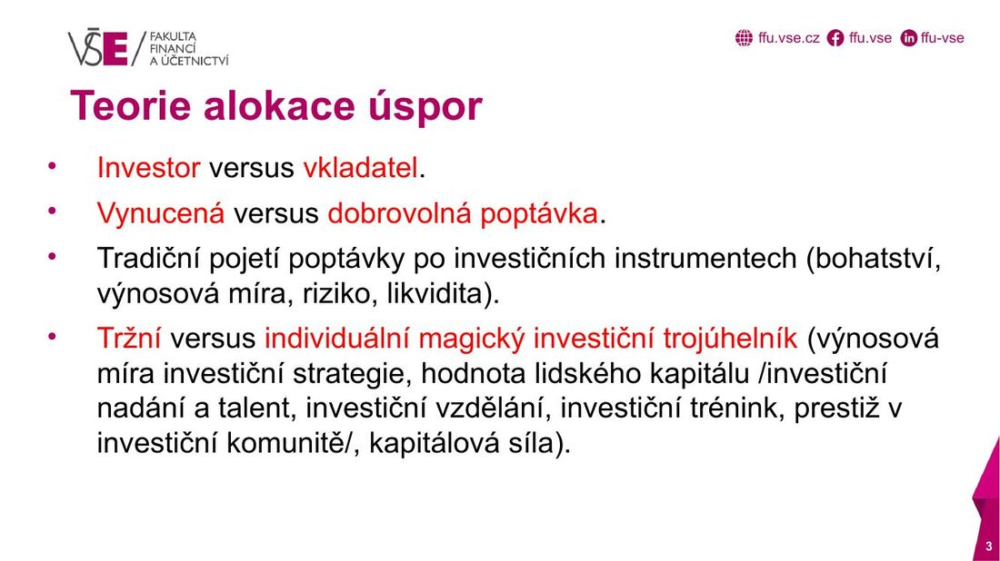
Výnosová míra: historická × očekávaná, struktura (s. 4)
Historická výnosová míra je změřená z minulých dat. Očekávaná je odhad budoucnosti, na kterém stojí rozhodnutí. Historie je jen vodítko, nezaručuje budoucí výnos. Struktura výnosové míry: z čeho se skládá (cenový výnos + běžný příjem, nominální × reálná, hrubá × čistá po daních).
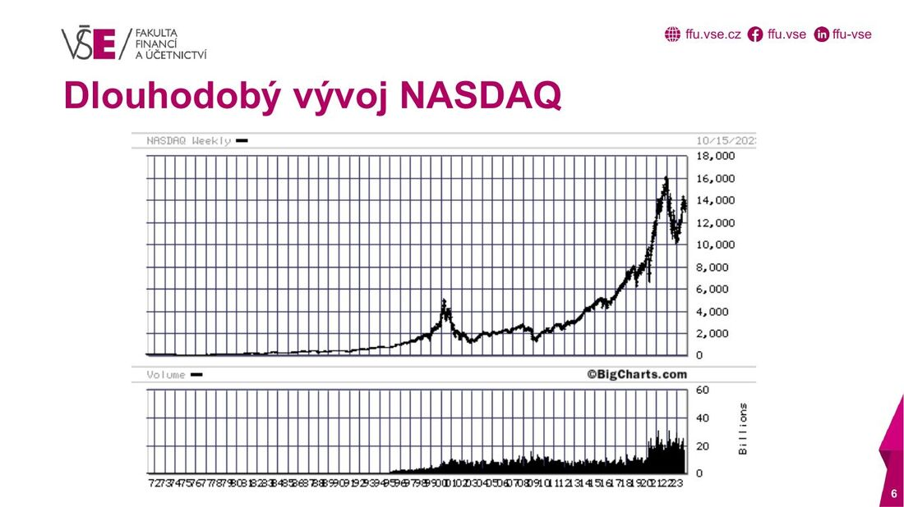
Výnos a riziko instrumentů podle trhů a období (s. 7–19)
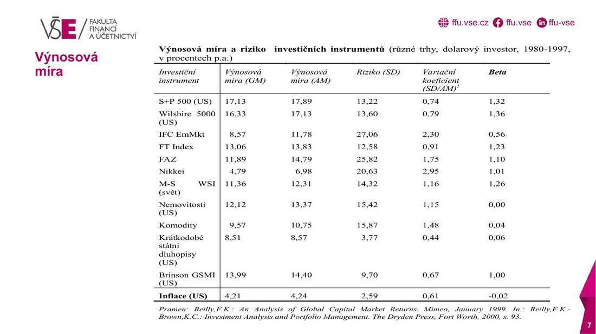
Co si odnést z tabulek:
- Riziko i výnos rostou stejným směrem: T-bills < státní dluhopisy < podnikové dluhopisy < akcie < akcie malých firem (s. 8).
- Dlouhodobě (USA, 1900–2000) vyhrávají akcie: nominálně 10,1 % p.a. při SD 19,9 %, dluhopisy 4,8 %, pokladniční poukázky 4,1 %, inflace 3,2 % (s. 11). Proto „století akciového investování“. Aktualizace 1900–2021: akcie GM 9,8 %, dluhopisy 5,0 %, T-bills 3,6 %, inflace 2,9 % (s. 18).
- Výnos závisí na období: akcie USA mají GM 9,32 % (1928–2010), ale jen 1,38 % v letech 2001–2010; dluhopisy tehdy 5,49 % (s. 9). Reálně 2000–2015 vychází akcie ve světě jen 1,6 %, dluhopisy 4,9 % (s. 16).
- Výnos závisí na zemi: v Itálii 1900–2000 byla inflace 9,1 % (SD 36,6 %), takže reálný výnos T-bills byl −4,1 % a dluhopisů −2,2 %; akcie reálně +2,7 % při SD 29,4 % (s. 13–14). Reálně 1966–2015 nejlépe JAR (akcie 7,9 %), nejhůře Itálie (1,4 %) (s. 15).
- Volatilita není konstantní: SD akcií S&P 500 byla 13,22 % (1980–97), 16,83 % (2004–10) a 20,73 % (2007–10, krize) (s. 22).
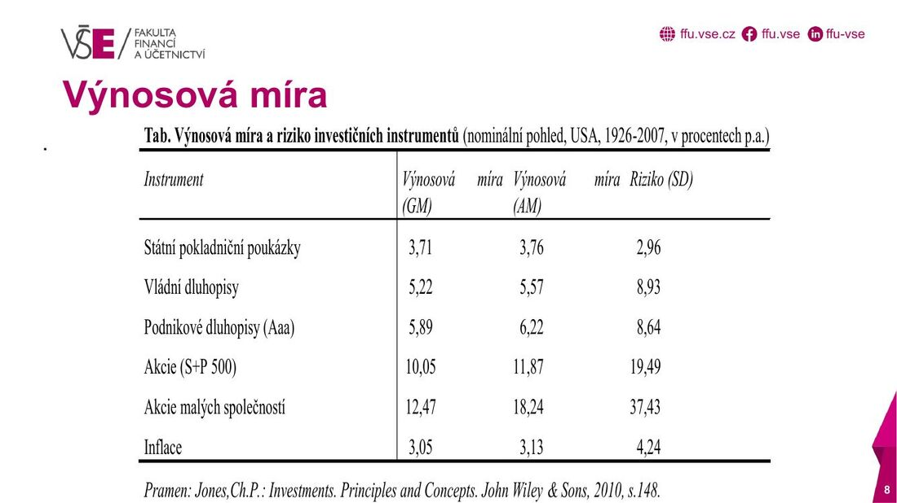

- Akcie S&P 500: $\dfrac{1{,}1005}{1{,}0305} - 1 = 6{,}79\ \%$ (slajd 10: 6,79 %).
- Vládní dluhopisy: $\dfrac{1{,}0522}{1{,}0305} - 1 = 2{,}11\ \%$ (slajd: 2,11 %).
- Malé akcie: $\dfrac{1{,}1247}{1{,}0305} - 1 = 9{,}14\ \%$ (slajd: 9,14 %). Pokladniční poukázky: 0,64 % (slajd 0,65 %, rozdíl je zaokrouhlení).
- Itálie (s. 13): akcie $\dfrac{1{,}120}{1{,}091} - 1 = 2{,}7\ \%$; T-bills $\dfrac{1{,}047}{1{,}091} - 1 = -4{,}0\ \%$ (slajd 14: −4,1 %). Při vysoké inflaci je „bezpečné“ aktivum reálně ztrátové.

Doplněk: přesný GM víceletých výnosů se počítá z růstových faktorů, viz příklad 5.
Zdanění a inflace snižují výnos (s. 20)
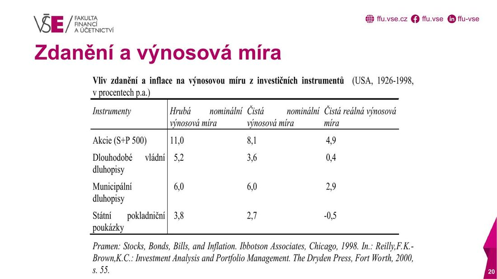
- Efektivní zdanění akcií: $1 - 8{,}1/11{,}0 = 26\ \%$; dluhopisů $1 - 3{,}6/5{,}2 = 31\ \%$; T-bills $1 - 2{,}7/3{,}8 = 29\ \%$; municipální 0 %.
- Implicitní inflace z akcií: $\dfrac{1{,}081}{1{,}049} - 1 = 3{,}05\ \%$, což odpovídá inflaci ve slajdu 8 (3,05 %).
- Dluhopisy: $1{,}036 / 1{,}0305 - 1 \approx 0{,}5\ \%$ (slajd 0,4 %). Po zdanění a inflaci dluhopisy a T-bills téměř nic (nebo ztrátu) nevydělaly, akcie 4,9 %.
Riziko (s. 21–22)
- Riziko = nebezpečí, že investor nedosáhne očekávané výnosové míry (s. 21).
- Druhy: úrokové, tržní, inflační, podnikatelské, finanční a další.
- Jedinečné (specifické pro firmu, diverzifikovatelné) × systematické (tržní, nediverzifikovatelné, měří se betou).
- CAPM a jeho modifikace jsou na s. 21 jen jako osnova. Doplněk (Musílek 2011, kap. 14): $E(r_i) = r_f + \beta_i\,[E(r_M) - r_f]$ – odměna jen za systematické riziko.
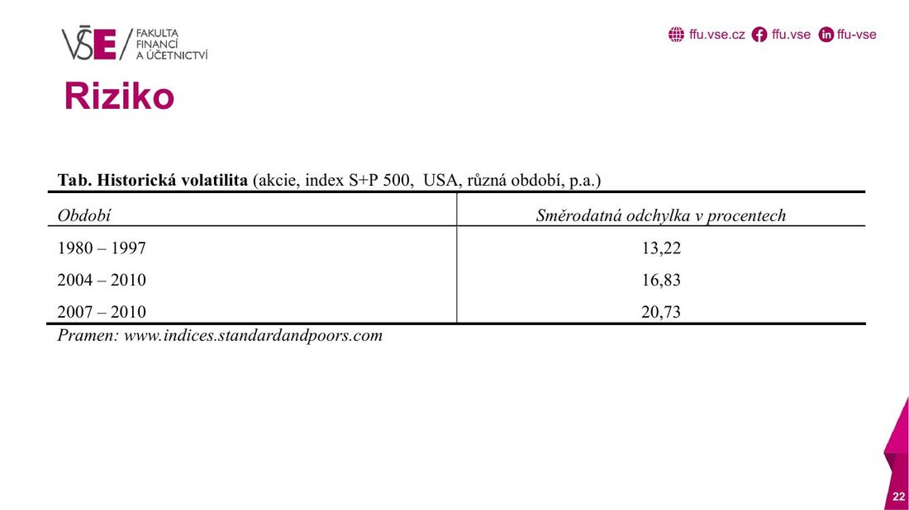
- AM: A = (20 − 10 + 15 + 5)/4 = 7,5 %; B = (8 + 2 + 6 + 4)/4 = 5,0 %.
- GM: $A = (1{,}2 \cdot 0{,}9 \cdot 1{,}15 \cdot 1{,}05)^{1/4} - 1 = 6{,}86\ \%$; $B = (1{,}08 \cdot 1{,}02 \cdot 1{,}06 \cdot 1{,}04)^{1/4} - 1 = 4{,}98\ \%$.
- SD (výběrová, n − 1): $A = \sqrt{\tfrac{(12{,}5)^2 + (-17{,}5)^2 + (7{,}5)^2 + (-2{,}5)^2}{3}} = 13{,}23\ \%$; B = 2,58 %. (S dělením n: A = 11,46 %; ověř, které zadání test používá.)
- CV = SD/AM: A = 13,23/7,5 = 1,76; B = 2,58/5,0 = 0,52.
- Závěr: A vydělá víc (GM 6,86 vs 4,98 %), ale na jednotku výnosu nese 3,4× víc rizika. Pro averzního investora je lepší B, pro toho, kdo chce maximální růst, A. A má GM < AM o 0,64 p. b., B jen o 0,02 p. b.
- Očekávaný výnos (vážený průměr): $0{,}6 \cdot 11{,}6 + 0{,}4 \cdot 5{,}3 = 9{,}08\ \%$.
- Riziko portfolia: $\sigma_p = \sqrt{w_1^2\sigma_1^2 + w_2^2\sigma_2^2 + 2 w_1 w_2 \rho\,\sigma_1\sigma_2}$. Korelaci slajdy neuvádějí; při předpokládané $\rho = 0{,}2$ vyjde $\sigma_p \approx 12{,}97\ \%$.
- $CV = 12{,}97/9{,}08 = 1{,}43$, tedy lepší než čistě akcie ($19{,}6/11{,}6 = 1{,}69$): diverzifikace snížila riziko víc než výnos. Výnos portfolia je vždy vážený průměr, riziko ne (je nižší, pokud $\rho < 1$).
Likvidita (s. 23)
- Likvidita = schopnost přeměnit investiční portfolio na disponibilní peněžní prostředky.
- Náklady likvidity: platí se za rychlý prodej (spread, dopad na cenu, poplatky).
- Metody zvýšení likvidity: vhodná forma instrumentu, odbourání restrikcí, zveřejňování informací, stock split, kótace na burze.
- Doplněk (Musílek 2011, kap. 14): nelikvidní aktiva musí nabízet vyšší výnos (prémie za nelikviditu), např. Amihud a Mendelson; blíže viz téma 1.
- Individuální magický trojúhelník: výnos strategie, lidský kapitál, vzdělání, trénink, prestiž, kapitálová síla (s. 3).
- GM = skutečný průměrný růst, AM = prostý průměr; GM ≤ AM. CV = SD/AM (s. 7).
- Dlouhodobě: akcie (≈10 % nom., 6,7 % reálně) > dluhopisy > T-bills; akcie nejrizikovější (SD ≈ 20 %). Výnos se liší podle období a země (s. 9–19).
- Reálný výnos = (1 + nominální)/(1 + inflace) − 1; daně a inflace snižují výnos, dluhopisy po nich vydělají téměř nic (s. 20).
- Riziko: jedinečné × systematické; volatilita se mění v čase a v krizi roste (s. 21–22).
- Likvidita a její zvyšování: forma instrumentu, informace, stock split, kótace (s. 23).
7. Fundamentální akciová analýza
Přednáška 12. 11. (odhad) · P. Musílek · zdroj: Fundamentální akciová analýza (1BP404_06_prednaska.pptx, slajdy 1–39); doplňky označené doplněk z Musílek (2011) kap. 2, 18, 15, 19
Akciová společnost (s. 3)
Slajd jen vyjmenovává okruhy. Základ výkladu je doplněk (Musílek 2011, kap. 2):
- Akcie = podíl spoluvlastníka a.s.: právo hlasovat na valné hromadě, na dividendu a na likvidační zůstatek. Akcionář je při úpadku poslední v řadě (reziduální nárok).
- Privátní × veřejná a.s.: veřejná má akcie přijaté k obchodování na veřejném trhu, privátní ne.
- Základní cíl a.s.: maximalizovat hodnotu pro vlastníky (tržní cenu akcií).
- Kmenová × prioritní akcie: kmenová = hlasovací právo a proměnlivá dividenda; prioritní = přednostní dividenda, obvykle bez hlasu.
- Varianty uspořádání: dualistický systém (valná hromada, představenstvo řídí, dozorčí rada kontroluje) × monistický (valná hromada a správní rada, která řídí i kontroluje).
Chování cen akcií (s. 4–13)
Slajdy 4–11 ukazují pětiletý vývoj akcií Ford, Volkswagen, Tesla, Citigroup, UBS, Apple a Microsoft. Poselství: ceny kolísají hodně a každá akcie jinak, často v řádu desítek až stovek procent.
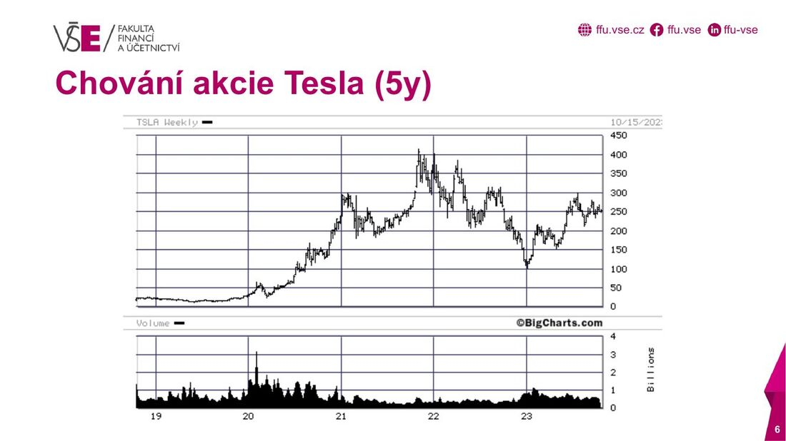
- Cenu tvoří nabídka a poptávka (s. 12).
- Nabídka: prodej nadhodnocených titulů, získání likvidity, změna investiční strategie, primární nebo sekundární veřejná nabídka (IPO, SPO).
- Poptávka: nákup podhodnocených titulů, zpětné odkupy, přímé investice, zestátnění, neekonomické motivy.
Analytické přístupy (s. 13)
Čtyři přístupy: fundamentální (FA), technický (TA), psychologický (PA) a kombinovaný. Přednášející ale zdůrazňuje, že hlavní směr investiční ekonomie má mnoho důkazů o ekonomicky efektivním chování cen likvidních akcií. Fundamentální analýza má tedy na likvidních trzích omezený prostor (viz téma 9).
Fundamentální akciová analýza (s. 15–24)
Top-down začíná ekonomikou, pak odvětvím, pak firmou. Bottom-up začíná výběrem firmy bez ohledu na makro (s. 15).
Slajd 16 je tabulka vlivu neočekávaných změn na cenu akcie P:
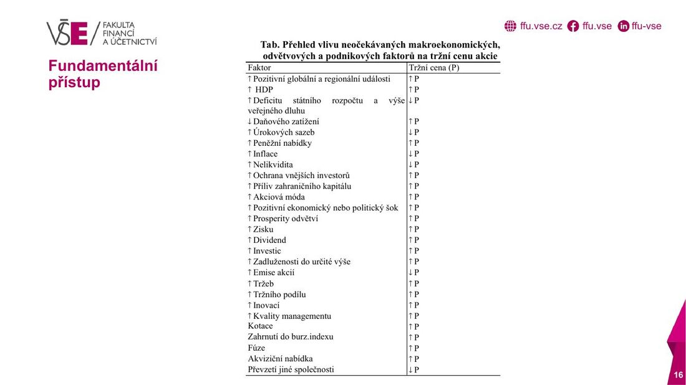
| Cena akcie roste při | Cena akcie klesá při |
|---|---|
| růstu HDP, peněžní nabídky, přílivu zahraničního kapitálu, ochrany vnějších investorů | růstu deficitu a veřejného dluhu, úrokových sazeb, inflace, nelikvidity |
| poklesu daňového zatížení | emisi akcií (více akcií na trhu), převzetí jiné společnosti (kupující) |
| růstu zisku, dividend, investic, tržeb, tržního podílu, inovací, kvality managementu, zadluženosti do určité výše | |
| kotaci, zařazení do burzovního indexu, fúzi, akviziční nabídce (cena cílové firmy) |
Odvětvová analýza (s. 17–23)
Odvětví se vyvíjejí velmi různě. Za 6 měsíců byly nejlepší audio/video technika (+90,7 %) a bankovnictví (+40,8 %), nejhorší osobní letecká doprava (−53,4 %) a letecká přeprava (−38,4 %) (s. 17–18). Jednotlivé akcie za rok: od +75 % (Universal Display) po −91 % (Energous) (s. 22–23). Rozptyl je mezi odvětvími i firmami obrovský.
Odvětvové faktory (s. 19): citlivost na fáze hospodářského cyklu (cyklické, neutrální a anticyklické akcie), regulace, životní cykly a inovace.
- Expanze: trh 28,6 % p.a.; cyklické 38,5 %; defenzivní 13,7 %. Rozpětí $38{,}5 - 13{,}7 = 24{,}8$ p. b. ve prospěch cyklických.
- Pokles: trh −24,8 % p.a.; cyklické −29,1 %; defenzivní −16,6 %. Rozpětí $-16{,}6 - (-29{,}1) = 12{,}5$ p. b. ve prospěch defenzivních.
- Závěr: cyklické akcie zesilují pohyb trhu (v expanzi vydělají víc, v poklesu ztratí víc). Defenzivní jsou stabilnější. Výsledky odpovídají slajdům.

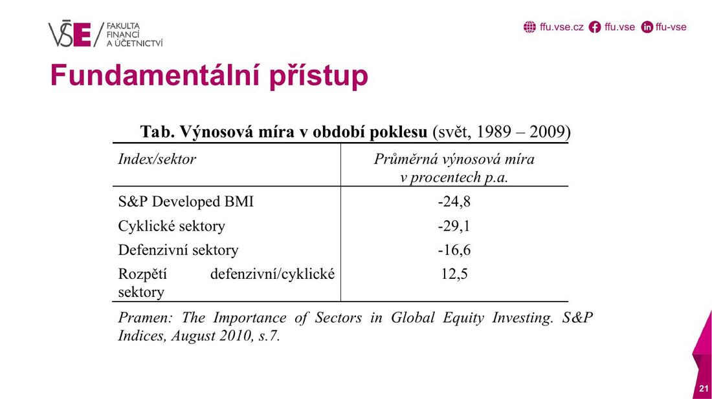
Podnikové faktory (s. 24)
Klíčové podnikové faktory: investiční politika (do čeho firma investuje), finanční politika (poměr vlastního a cizího kapitálu), dividendová politika (kolik zisku vyplatit), management a očekávaný × skutečný zisk. Cenu hýbe hlavně to, o kolik se skutečný zisk liší od očekávaného.
Doplněk (Musílek 2011): podle Modiglianiho a Millera (1961) na dokonalém trhu na dividendách hodnota firmy nezávisí, hodnotu tvoří investiční politika. Podle signalizační teorie je zvýšení dividendy signál důvěry managementu, snížení je špatná zpráva.
Teorie vnitřní hodnoty (s. 26)
Pojem vychází z Cootnera (1964). Slajd uvádí metody kvantifikace vnitřní hodnoty podle toho, na co se dívají: budoucnost (diskontování budoucích příjmů), minulost (účetní hodnota, historické výsledky) a komparace (tržní násobky, srovnání s podobnými firmami). Dále hodnotový screening a investiční praxe (Graham a Dodd, Buffett, Gladiš).
- $D_1 = 19{,}23 \cdot 1{,}04 = 20$ Kč.
- $V_0 = 20 / (0{,}10 - 0{,}04) = 333{,}33$ Kč.
- Cena 280 Kč < 333 Kč → podhodnocená → koupit.
- Při $k = 11$ % je $V_0 = 20 / 0{,}07 = 285{,}71$ Kč, tedy o 14,3 % méně. Malá změna sazeb vyvolá velkou změnu hodnoty.
Investiční přístup Grahama a Dodda (s. 27–28)
- Tržní cena osciluje v dlouhém období (5 let) kolem vnitřní hodnoty (s. 27).
- Vnitřní hodnota má odrážet hlavně skutečné, zveřejněné výsledky. Prognózy zisků jsou zpravidla velmi nepřesné.
- Hodnota založená jen na budoucím růstu zisku je spekulace: vede k nadhodnocení akcie a pozdější výrazné korekci.
- Cena se nemá výrazně odchylovat od účetní hodnoty při zohlednění ziskovosti a P/E. P/E nemá být vyšší než 25 (průměrný zisk za posledních 7 let) nebo 20 (zisk za posledních 12 měsíců).
- Bezpečnostní polštář (margin of safety): kupovat jen s rozdílem mezi vnitřní hodnotou a cenou nejméně 50 % (s. 28).
- Další faktory ceny: dlouhodobé vyhlídky, kvalita managementu, finanční síla a kapitálová struktura, historie dividend.
Warren Buffett (s. 29–36)
- Nejúspěšnější Grahamův žák, klíčový vlastník holdingu Berkshire Hathaway (s. 29). Investuje do energetiky, pojišťovnictví, maloobchodu, dopravy a portfolia velkých známých firem (American Express, Coca-Cola, Wells Fargo, P&G aj.).
- Většina aktivit (minimálně dvě třetiny, výroční zpráva 2009) je běžné podnikání v pojišťovnictví, energetice a službách, ne portfoliové investování (s. 30).
- Akviziční kritéria pro kontrolní podíly (s. 31): velké firmy, trvalá ziskovost, rentabilní a nezadlužené, kvalitní management, jednoduchý předmět podnikání, akvizice jen na neveřejných trzích.
- Franšíza (s. 32): silná značka, snadno pochopitelný byznys, velká finanční síla, téměř monopolní postavení (Gillette, Washington Post). Kupuje v době skandálu nebo špatné zprávy (Coca-Cola po neúspěchu New Coke a krachu trhu 1987).
- Management (s. 33): realistické cíle, organický růst zevnitř, ne jen akvizicemi, moudré rozdělení kapitálu, žádné obří odměny v akciových opcích.
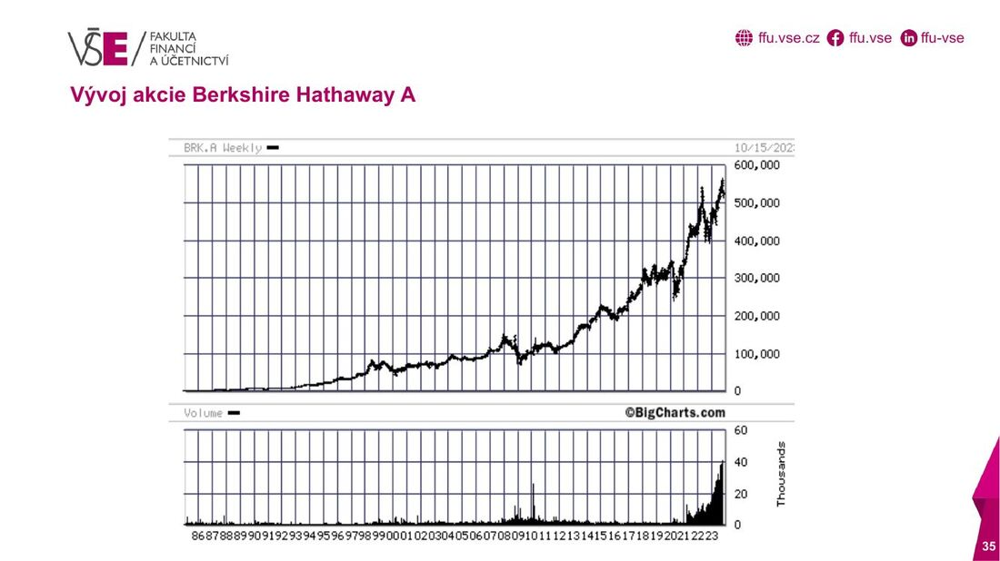
Háček: 20,3 % je spočteno ze změny vnitřní (účetní) hodnoty, ne z tržní ceny akcie. Čísla nejsou přímo srovnatelná s indexem.
Daniel Gladiš: hodnotový screening (s. 37–39)
| Oblast | Kritérium podle Gladiše (s. 37–38) |
|---|---|
| Ocenění | P/E < 15, P/BV < 1,5 |
| Dividendy | vyplácené dlouhodobě, nejméně 10 let |
| Likvidita a zadluženost | current ratio (krátkodobá aktiva / krátkodobé závazky) > 2, debt to equity (dluh / vlastní kapitál) < 0,6 |
| Ziskovost | růst zisku za posledních 10 let > 4 % ročně |
| Velikost | tržní kapitalizace > 500 mil. USD |
Screening je jen první krok k výběru investic (s. 39): rychle zvládne velké množství dat, ale potom je nutná podrobná analýza. Doplněk: nízké P/E může být past (value trap), když zisky v upadajícím odvětví klesají.
- Fundamentální analýza určuje vnitřní hodnotu z faktorů globálních, odvětvových a podnikových. Top-down jde od ekonomiky k firmě, bottom-up opačně.
- Cenu akcie snižuje růst deficitu, úrokových sazeb, inflace, nelikvidity a emise akcií. Zvyšuje růst HDP, zisku, dividend a kvalitní management. Důležité jsou neočekávané změny.
- Cyklické akcie vydělají v expanzi víc (38,5 % × 13,7 %) a v poklesu víc ztratí (−29,1 % × −16,6 %) než defenzivní.
- Graham a Dodd: cena osciluje kolem vnitřní hodnoty (5 let), počítej se skutečnými výsledky, P/E nejvýše 25 (7 let) resp. 20, bezpečnostní polštář alespoň 50 %. Kupuj podniky, ne akcie.
- Buffett: franšízy, trvalá ziskovost, nezadlužené firmy, kvalitní management, nákup po skandálu. Výnos 20,3 % × 9,3 % je z účetních hodnot.
- Gladiš: P/E < 15, P/BV < 1,5, dividendy 10 let, current ratio > 2, D/E < 0,6, růst zisku > 4 %, kapitalizace > 500 mil. USD. Screening je jen první krok.
- Doplněk: Gordonův model $V_0 = D_1/(k-g)$, cena < hodnota = podhodnocená.
8. Technická analýza a psychologie trhů: racionální a iracionální chování akciových trhů
Přednáška 19. 11. (odhad) · P. Musílek · zdroj: Racionální a iracionální chování akciových trhů (1BP404_07_prednaska.pptx, slajdy 1–52)
Technická analýza a její využitelnost
- grafické metody: formace vedoucí ke změně trendu a formace potvrzující trend (s. 4),
- technické indikátory: šíře trhu, nová maxima a minima, klouzavé průměry, relativní síla, momentum a anticyklické indikátory (neúplné jednotky obchodování, krátké prodeje, investiční doporučení, poměr put/call opcí) (s. 5).
Doplněk (Musílek 2011, obecná literatura): klouzavý průměr (MA) je průměr cen za posledních n dní, vyhlazuje šum. Zlatý kříž = krátký MA (např. 50denní) protne dlouhý (200denní) zdola (signál nákupu), opačně kříž smrti. Podle Dowovy teorie existují trendy primární (roky), sekundární (korekce, týdny až měsíce) a terciární (denní šum); trend musí potvrdit i druhý index a objem. RSI nad 70 značí překoupený trh, pod 30 přeprodaný.
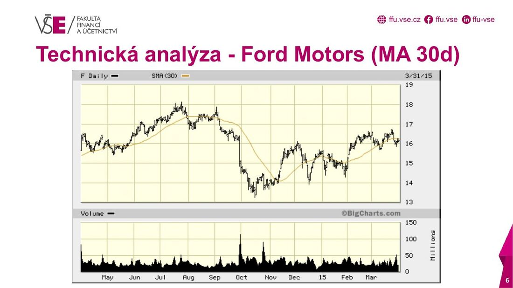
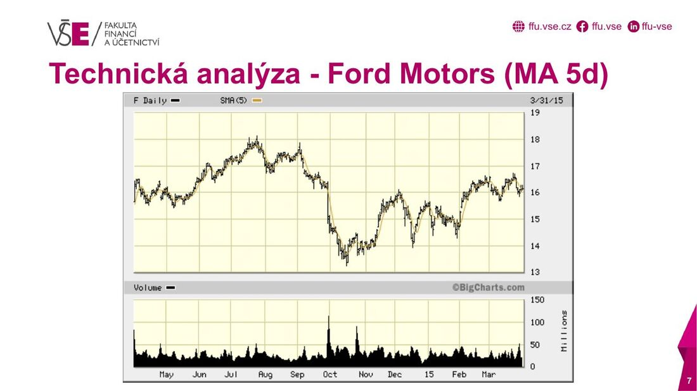
Využitelnost TA: proč je sporná
- Empirické studie ve vyspělých státech nepotvrdily dlouhodobé nadprůměrné výnosy TA po očištění o riziko a po započtení transakčních nákladů (např. Fama a Blume 1969, Pinches 1970) (s. 8).
- Hlavní proud ekonomie věří, že likvidní trhy jsou efektivní minimálně ve slabé formě, což trendy vylučuje, ale TA je na trendech postavena (s. 8).
- Indikátory se vykládají nejednotně, i Dowova teorie se dnes často interpretuje jinak. Neexistuje důvod, proč by se historické formace měly opakovat (s. 9).
- TA podporují prodejci softwaru a hlavně poskytovatelé investičních služeb: chtějí, aby klienti obchodovali co nejčastěji (provize), k čemuž je indikátory „nutí“ (s. 9).
- nebraly v úvahu riziko (výnos mohl plynout z vyššího rizika portfolia, ne z TA),
- nezapočítaly transakční náklady a daně,
- ověřily výkonnost jen v krátkém období (je třeba opakovaně celý investiční cyklus, 5 až 10 let),
- testovaly jen jeden, často malý soubor akcií, ne rozsáhlý vzorek.
Psychologie a ceny akcií
Psychologii do výkladu cen akcií přinesli Keynes (Obecná teorie, 12. kap., 1936), Kostolany (Burzovní seminář, 1987) a Shleifer a Summers (teorie hlučného obchodování, 1990) (s. 14).
Doplněk (Kostolany): tendence burzy = peníze + psychologie; „tvrdohlaví“ investoři (vlastní peníze, trpělivost) kupují od „roztřesených“ (dluh, panika) na dně.
Behaviorální finance
| Teorie | Autoři | Jádro |
|---|---|---|
| Prospektová teorie (s. 18) | Kahneman, Tversky 1979 (kumulativní 1992) | vychází z hodnotové funkce (ne užitkové, jako neoklasika). Investoři jsou rizikově averzní i ztrátově averzní: užitek ze zisku roste pomaleji, než klesá užitek ze stejné ztráty |
| Teorie zarámování (framing, s. 19) | Kahneman, Tversky 1981 | reakce na stejnou informaci se liší podle toho, jak je podána |
| Teorie přehánění (overreaction, s. 20) | De Bondt, Thaler 1985 | ceny po nečekané informaci „přestřelí“ správnou hodnotu, a proto musí nastat reverzní pohyb, který lze prý predikovat |
| Teorie nadměrného sebevědomí (overconfidence, s. 21) | Barber, Odean 2000 | správci a investoři věří v nadprůměrné schopnosti, obchodují příliš často a přeskupují portfolio. Výsledek: výrazně nižší výnos než u strategie kup a drž |
Investiční (spekulativní) bubliny
Cenotvorba na likvidních trzích funguje poměrně efektivně, ale ojediněle a nahodile se ceny výrazně odchýlí od vnitřních hodnot, v krátkém i dlouhém období (Kindleberger 1996, Shiller 2010) (s. 23). Trh není homogenní (různá alokační, transakční a cenová efektivnost) a skokové změny chování způsobují neočekávané fundamentální faktory (s. 24).
- Kindleberger: vzestupný pohyb cen v neudržitelném rozsahu, který praskne,
- King a kol.: ceny se výrazně odlišují od vnitřních hodnot,
- Shiller: období extrémního, ale dočasného nadšení investorů,
- ČNB (2007): explozivní a asymetrická odchylka ceny od fundamentu s možností náhlé korekce; často psychologicko-behaviorální faktory, sebenaplňující očekávání,
- Půlpán a kol.: dočasná odchylka kursu od vnitřní hodnoty vzniklá působením davové psychologie; praskne rychle, jakmile optimismus ochladne,
- přednášející: výrazné a dlouhodobé odchýlení od vnitřních hodnot způsobené fundamentálními, spekulativními i psychologickými faktory a také investiční kriminalitou; při prudké změně prostředí rychle splaskne.
Druhy (s. 30): komoditní, nemovitostní, akciové, dluhové; lokální, národní, regionální, globální; samostatné nebo propojené; mikro, krátko-, středně- a dlouhodobé.

Čtyři typy bublin a jejich zdroje (s. 31)
| Typ | Zdroj / příčina | Autor, schéma |
|---|---|---|
| Fundamentální (s. 32–34) | významná část trhu výrazně a dlouho nadhodnotí fundamentální veličiny (odvětvové, makro, podnikové) vstupující do modelů vnitřní hodnoty | Fisher 1932–33: nové vynálezy → investice → ceny → dluhové financování → spekulace → úvěry → peněžní nabídka → inflace → optimismus → bublina. Kindleberger 1996: exogenní šok → změna očekávání → střízlivá spekulace → iracionální spekulace → bankovní úvěry → spekulativní mánie → bublina |
| Fundamentálně-spekulativní (s. 37) | na trzích nelze dosáhnout matematické přesnosti, velký vliv mají subjektivní faktory; bublinu vyvolává způsob tvorby kursových prognóz | Keynes (1936) |
| Behaviorální (s. 38) | silný vliv psychologie, investiční chyby „noise traders“, přehnané reakce na neočekávané události | Shleifer a Summers 1990 (hlučné obchodování), De Bondt a Thaler 1995 |
| Racionální (s. 39) | investoři kupují nad vnitřní hodnotou v očekávání budoucích kapitálových zisků. Modifikace: deterministická, stochastická, periodicky splasknutá, neúplně splasklá bublina | Blanchard a Watson 1982 |
Specifika akciových bublin (s. 40–42)
- Likvidní akciové trhy jsou efektivní, ale efektivnost není konstantní: kolísá likvidita a nahodile nastávají přelomové změny prostředí (Pastor a Veronesi 2009), což zpomaluje a zkresluje zapracování nových informací do cen.
- Příčiny jsou makroekonomické, sektorové i podnikové. Výkyvy sentimentu často způsobuje aktivní měnová politika centrálních bank, která je impulsem pro vznik i splasknutí.
- Impulsem jsou i sektorové faktory (technologická bublina druhé poloviny 90. let). Budoucí vývoj odvětví se předvídá těžko, přitom diskontování sektorových životních cyklů je klíčem k efektivní cenotvorbě.
Nemovitostní bubliny (s. 43–47)
- Trhy rezidenčních (domy, byty) a komerčních nemovitostí (kanceláře, výroba, sklady) se výrazně liší od likvidních akciových trhů a obvykle se chovají neefektivně. Bubliny jsou proto poměrně časté: Florida (30. léta), Japonsko (80.), Skandinávie (90.), USA 2000–2006.
- Poruchy cenotvorby lze poznat obvykle až ex post z jednoduchých poměrů: cena nemovitosti / roční nájem, cena / roční příjem rodiny, půjčka / hodnota zajištění (LTV), dluh domácností / hodnota nemovitosti (s. 44).
- USA 2000–2006 – příčiny (s. 47): nadměrná úvěrová expanze a nízké sazby, příliv imigrantů, Community Reinvestment Act, hypoteční boom, sekuritizace, regulatorní arbitráže bank.
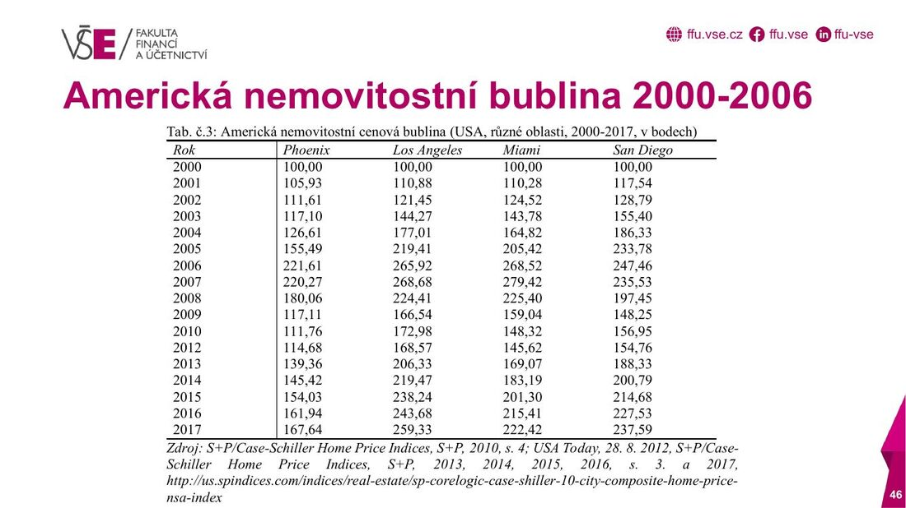
Historický příklad: rakouská železniční bublina 1873 (s. 35–36)
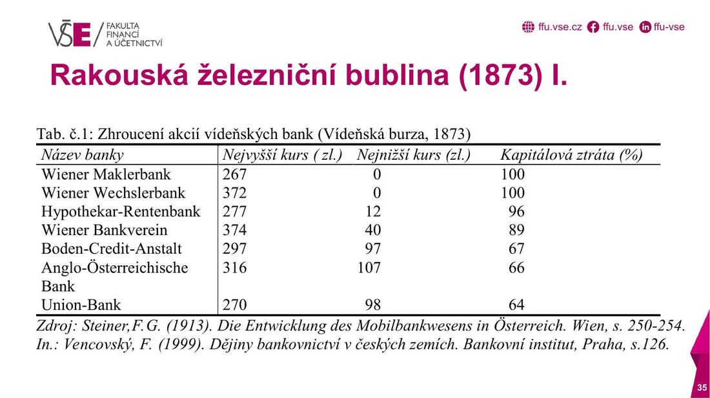
Příklad ukazuje, že bublina nastává v bankovním sektoru financujícím spekulaci a její splasknutí (krach akcií bank) vede k hlubokým ztrátám. Přepočet z kurzů na slajdech sedí s uvedenými procenty.
Riziko, regulace a predikce bublin (s. 48–52)
- Splasknutí bublin, které skončí bankovní krizí, má vysoké náklady. Post-lehmanovská regulace proto usiluje o včasnou identifikaci rizik (s. 48). Evropská rada pro systémová rizika (ESRB) sleduje stabilitu systému a vydává varování a doporučení (s. 49).
- Autor prezentace ale nepředpokládá, že instituce zajišťující finanční stabilitu budou úspěšné: koncept makroobezřetnostní intervence označuje za „značně nedůvěryhodný“ (s. 49, 52). Jde o názor přednášejícího.
- Bubliny lze poměrně přesně identifikovat ex post, ale predikce ex ante selhává. Jednoduché metody (poměrové ukazatele) i pokročilé ekonometrické (variance bounds test, kointegrační test) nejsou při predikci spolehlivé (s. 50).
Závěry přednášky (s. 51–52)
- Likvidní trhy fungují poměrně efektivně, ale nahodile se ceny odchylují od vnitřních hodnot i dlouhodobě.
- Častější bubliny jsou na neefektivních, málo likvidních trzích, zejména nemovitostních.
- Včasná predikce bublin je obvykle neúspěšná.
- TA = grafické metody a indikátory (klouzavé průměry, relativní síla, momentum, šíře trhu); studie nepotvrdily nadprůměrný výnos po riziku a nákladech, TA odporuje slabé formě efektivnosti.
- Úspěch TA ve studiích často neřešil riziko, náklady a daně, krátké období ani velký vzorek akcií. Prodejci a poskytovatelé služeb chtějí časté obchodování.
- Keynes: soutěž krásy = hádání očekávání ostatních. Behaviorální finance: prospektová teorie (ztrátová averze), zarámování, přehánění (De Bondt, Thaler), nadměrné sebevědomí (Barber, Odean).
- Bublina = dlouhé a výrazné odchýlení ceny od vnitřní hodnoty (psychologie, spekulace, fundament, kriminalita). Čtyři typy: fundamentální, fundamentálně-spekulativní, behaviorální, racionální (Blanchard, Watson).
- Nemovitostní trhy jsou neefektivní, bubliny častější (USA 2000–2006: úvěry, nízké sazby, sekuritizace). Bubliny jdou poznat ex post, predikce ex ante selhává.
9. Teorie efektivních trhů
Přednáška 26. 11. (odhad, v den průběžného testu) · P. Musílek · zdroj: Teorie efektivních trhů (1BP404_08_prednaska.pptx); výklad doplněn z Musílek (2011) kap. 15
Přednáška má dvě části. První vysvětluje, co znamená, že je trh „efektivní“, a jak se to testuje. Druhá staví proti sobě dva pohledy na trh: teorii efektivních trhů (TET) a behaviorální finance (BF). Právě toto srovnání zabírá většinu slajdů a hodí se jako kostra eseje.
Co je efektivní trh
Proč by to tak mělo být? Kvůli konkurenci. Kdyby byla akcie po zveřejnění dobré zprávy zjevně levná, tisíce investorů ji začnou kupovat a cena vyskočí dřív, než na tom někdo stihne vydělat. Nikdo tedy nemusí být génius. Stačí, že je dost lidí, kteří informace sledují a obchodují podle nich.
Z toho plynou tři důsledky, které přednášející zdůrazňuje:
- Změny cen jsou náhodné. Nová informace je z definice nepředvídatelná (kdyby šla předvídat, už by byla v ceně). A když se cena hýbe jen podle nových zpráv, hýbe se náhodně: náhodná procházka (random walk).
- Obchodní strategie selhávají. Žádné pravidlo („kupuj po poklesu“, „kupuj levné P/E“) nevydělává soustavně víc než trh, protože jakoukoli výhodu ostatní rychle vyrovnají.
- Výsledky investorů jsou srovnatelné. Někdo má rok štěstí, ale dlouhodobě a po zohlednění rizika vychází všichni zhruba stejně.
Předpoklady, aby to fungovalo: konkurence mezi investory, dostupné informace, racionální chování, poctivé obchodování (žádné podvody a insider trading), vysoká likvidita a nízké transakční náklady. Když některý chybí, třeba na malém nelikvidním trhu, efektivnost slábne.
Myšlenka je stará: Bachelier už roku 1900 popsal ceny jako náhodný proces. Hlavním jménem teorie je ale Eugene Fama (přednáška uvádí jeho práce z let 1965, 1970, 1991 a 1997).
Tři formy efektivnosti a jak se testují
Formy se liší tím, jaké informace už v ceně jsou. Čím silnější forma, tím víc informací je „spotřebováno“ a tím méně se dá vydělat.
| Forma | Co je už v ceně | Co tedy nefunguje | Test (podle přednášky) | Platí? |
|---|---|---|---|---|
| Slabá | minulé ceny a objemy | technická analýza | testy kursové nezávislosti, testování TA | ano, podpořena empirií |
| Středně silná | navíc všechny veřejné informace | i fundamentální analýza | testy událostí (event studies) | spíše ano |
| Silná | navíc i neveřejné (vnitřní) informace | i obchodování insiderů | výkonnost portfolií insiderů | spíše ne |
Logika testů: u slabé formy se zkoumá, jestli dnešní změna ceny nějak souvisí se včerejší. Pokud ne (kurzy jsou „nezávislé“), z grafů se nic vyčíst nedá. U středně silné se sleduje, jak cena zareaguje na zveřejnění zprávy (událost): když se přizpůsobí okamžitě a pak už se nehýbe, analýza veřejných zpráv nepomůže. U silné se ptáme, jestli manažeři s vnitřními informacemi vydělávají víc. Vydělávají, proto silná forma „spíše neplatí“. Je to i důvod, proč je insider trading zakázaný (téma 2).

Jsou skutečné trhy efektivní?
Přednášející tu má jasný názor: nejlikvidnější americké akcie se chovají ekonomicky efektivně a shoduje se na tom většina významných investičních ekonomů. „Ekonomicky“ znamená prakticky: drobné odchylky existují, ale po započtení nákladů a rizika se na nich vydělat nedá.
Efektivnost ale není konstantní. Mění se, protože kolísá likvidita trhu a občas přijde přelomová změna (krize, nová technologie, nová regulace). Trh pak nějakou dobu nedokáže zcela nové informace přesně vstřebat.
Střední Evropa (včetně Prahy): dřív byla zjevně neefektivní, ale neefektivnost nejlikvidnějších akcií se výrazně snížila. V některých obdobích už se chovají efektivně ve slabé formě. Prakticky to znamená, že ani tady technická analýza výrazně nepomáhá (Schotman a Zalewska 2004, Hájek 2006).
Anomálie
Anomálie jsou opakující se situace, kdy trh vynáší víc, než by podle teorie měl. Přednáška je jen vyjmenovává, tak tady je stručně, co znamenají (doplněk, Musílek 2011):
- small cap: akcie malých firem dlouhodobě vynášely víc, než odpovídá jejich riziku,
- nízké P/E: „levné“ akcie (nízká cena vůči zisku) vynášely víc než drahé,
- lednový efekt: akcie, hlavně malé, rostou v lednu (v prosinci je lidé prodávají kvůli daním, v lednu se vracejí),
- měsíční, pondělní a denní cyklus: výnosy se liší podle části měsíce, dne v týdnu (pondělí bývá slabší) a hodiny obchodování.
Jak je vysvětlit, záleží na tom, komu věříte. Podle TET jsou anomálie náhodné a vzácné a jakmile se o nich ví, investoři je využijí a zmizí. Podle BF přetrvávají, protože je způsobuje lidská psychologie, která se nemění.
Behaviorální finance vs. teorie efektivních trhů
Tohle je hlavní část přednášky. Oba přístupy se dívají na stejný trh, ale vycházejí z opačného pohledu na člověka. TET předpokládá racionálního investora, který správně zpracuje každou informaci. BF říká, že lidé se chovají předvídatelně iracionálně: přehánějí, napodobují ostatní, různě vnímají riziko. Ze sporu o investora pak plyne všechno ostatní:
| Otázka | Behaviorální finance | Teorie efektivních trhů |
|---|---|---|
| Je investor racionální? | ne zcela, ovlivňuje ho psychologie | ano |
| Jak tvoří očekávání? | každý jinak vnímá informace a riziko | podle teorie očekávaného užitku |
| Jsou likvidní trhy efektivní? | ne | ano, ekonomicky efektivní |
| Jak se chová cena? | podle „investiční nálady“, stádní chování (herding) | náhodná procházka |
| Existují trendy? | ano, vytváří je dav, který se chová podobně | ne, jde o náhodu |
| Směřuje cena k rovnováze? | nemusí, arbitráž často selhává | ano, arbitráž velkých investorů ji drží průběžně |
| Mají všichni stejné informace? | ne, investoři jsou různorodí | ano, přístup je rovný |
| Jak cena reaguje na zprávu? | přehnaně (efekt přehánění) | rychle a přesně |
| Anomálie? | dlouhodobé, protože hodně lidí rozhoduje podobně | náhodné a vzácné, po objevení zanikají |
| Dá se dlouhodobě vydělávat nad trh (po zohlednění rizika)? | ano, správným odhadem chování ostatních | jen štěstím nebo nepoctivě |
| Čím se to dokazuje? | psychologické testy účastníků trhu, využívání nalezených anomálií | statistické testy (ne)závislosti časových řad |
- Efektivní trh rychle a přesně zapracuje nové informace do cen. Proto jsou změny cen náhodné, strategie nevydělávají soustavně víc než trh a výsledky investorů jsou srovnatelné.
- Formy: slabá (minulé ceny, platí), středně silná (veřejné informace, spíše platí), silná (i vnitřní informace, spíše neplatí). Testy: kursová nezávislost a TA, testy událostí, portfolia insiderů.
- Nejlikvidnější americké akcie jsou ekonomicky efektivní. Efektivnost se ale v čase mění. Ve střední Evropě už technická analýza výrazně nepomáhá.
- Anomálie: small cap, nízké P/E, lednový efekt, měsíční, pondělní a denní cyklus. Podle TET zanikají, podle BF přetrvávají.
- Spor TET × BF stojí na investorovi: racionální, nebo psychologií ovlivněný. Z toho plyne vše ostatní (náhoda × trendy, fungující × selhávající arbitráž, rychlá × přehnaná reakce).
10. Finanční krize
Přednáška 3. 12. (odhad) · P. Musílek · zdroj: Finanční krize (1BP404_10_prednaska.pptx, čísla slajdů v závorkách)
Vymezení finanční krize
- nedostatečná likvidita finančního systému,
- rozsáhlá insolventnost finančních institucí,
- nárůst volatility výnosových měr finančních instrumentů,
- výrazný pokles hodnoty finančních i nefinančních aktiv,
- podstatné snížení rozsahu alokace úspor ve finančním systému.
Druhy krizí (s. 3): úvěrová krize, krize likvidity, měnová (devizová) krize a investiční krize.
doplněk (Musílek 2011, kap. 6): jinde se krize dělí také na bankovní, dluhové, akciové (krachy) a systémové. Pro test se držte členění ze slajdu 3.
Příčiny finančních krizí: přehled teorií
Přednáška uvádí deset „typů příčin“ (s. 4) a ke každému jednu školu a jeden řetězec příčin a následků. Řetězec (šipky) je potřeba umět převyprávět vlastními slovy.
| Krize vyvolaná… | Autoři (s.) | Jádro mechanismu |
|---|---|---|
| nadměrnou úvěrovou expanzí | Fisher (1932, 1933), Minsky (1972, 1995), Eichengreen a Portes (1987), Kindleberger (1996) (s. 5) | boom financovaný dluhem, předlužení, prodeje aktiv v tísni, pád cen aktiv, insolvence bank, panika |
| chybnou makroekonomickou politikou | navazuje na Krugmanův model krize platební bilance (s. 8) | měnová expanze, fiskální deficit a pevný kurs vedou k devizové spekulaci, pádu rezerv a změně kursového režimu |
| nadměrnou finanční liberalizací | Kaminsky a Reinhart (1996), Bosworth (1998), Jonáš (1998), Hutchinson a McDill (1999) (s. 9) | po uvolnění regulace příliv krátkodobého zahraničního kapitálu, úvěry na spekulace, cenová bublina, její prasknutí |
| finanční panikou | Dybvig a Diamond (1983), Radelet a Sachs (1998) (s. 10) | sebenaplňující panika vkladatelů a investorů, panický úprk zahraničního kapitálu |
| splasknutím cenové bubliny | Blanchard a Watson (1982) (s. 11) | splasknutí racionální cenové bubliny snižuje cenu aktiv, a tím vyvolá krizi |
| selháním trhu | Akerlof a Romer (1994), Krugman (1998), Mishkin (1999) (s. 12) | informační asymetrie + liberalizace, pokles hodnoty aktiv bank (dvě varianty) |
| nadměrným přílivem zahraničního kapitálu | MMF, Světová banka (s. 13) | zahraniční kapitál + měnové a institucionální problémy, finanční nejistota, negativní faktory |
| institucionální nedokonalostí | Dooley (1997) (s. 14) | „kamarádský“ kapitalismus + neúčinná regulace, „kamarádské“ úvěry, pokles hodnoty bankovních úvěrů |
| cykly a strukturálními problémy; skupinou faktorů | (s. 15) | jen vyjmenováno, bez mechanismu |
Nadměrná úvěrová expanze: Fisher a Minsky
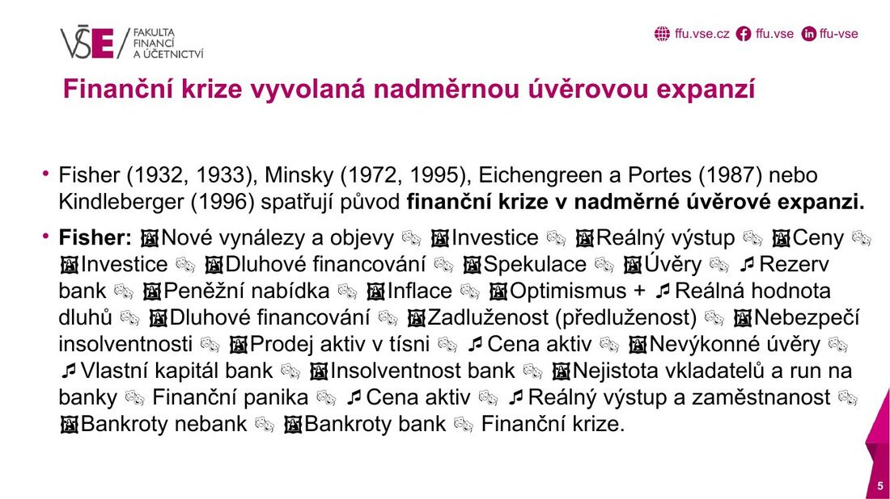
Minsky rozlišuje tři skupiny deficitních jednotek (s. 6–7):
| Skupina | Co očekává | Jak funguje |
|---|---|---|
| opatrné (hedge financing units) | očekávané důchodové peněžní toky převýší splatné závazky (úroky i jistiny) | čím větší podíl vlastního kapitálu, tím pravděpodobnější opatrné financování |
| spekulativní (speculative financing units) | peněžní toky a kapitálové zisky stačí na úroky, ne na umoření jistiny | stojí na opakovaném refinancování (obnova úvěrů nebo nové výpůjčky); rozvrat finančních kanálů při krizi a úpadcích bank je poškozuje |
| Ponziho (Ponzi financing units) | nestačí ani na úroky | extrémně spekulují na enormní růst cen spekulativních aktiv a pokles úrokových sazeb, nebo mají podvodné schéma typu pyramidové hry |
doplněk (Minsky; Kindleberger, Manias, Panics and Crashes): Minskyho hypotéza říká, že stabilita plodí nestabilitu. V klidných letech se firmy a banky posouvají od opatrného přes spekulativní až k Ponziho financování. Když přestanou růst ceny aktiv, systém se zhroutí („Minskyho moment“).
Další teorie příčin
- Chybná makropolitika (s. 8): neadekvátní politika (měnová expanze, fiskální deficit, pevně zavěšený kurs) → krize platební bilance → devizová spekulace ↑ → devizové rezervy ↓ → změna kursového režimu → prodej domácích aktiv zahraničními investory → finanční krize.
- Nadměrná liberalizace (Jonáš, s. 9): tuhá regulace a „finanční deprese“ → liberalizace a pevný kurs → optimismus, bankovní úvěry a růst → příliv krátkodobých zahraničních zdrojů → poptávka na spekulativních trzích, růst hodnoty akcií a nemovitostí, úvěry na spekulace → cenová bublina → zahraniční portfoliové spekulanty změní chování, krátkodobý kapitál odchází, prodeje aktiv → prasknutí bublin → insolvence finančních i nefinančních firem → krize.
- Finanční panika (Sachs, s. 10): „odjištění spouště“ → panika → panický úprk zahraničního kapitálu → pád kursu domácí měny → insolventnost firem → pokles likvidity systému → neadekvátní doporučení MMF → krize.
- Splasknutí bubliny (s. 11): splasknutí racionální cenové bubliny → pokles cen aktiv → krize.
- Selhání trhu (Mishkin, s. 12): informační asymetrie + liberalizace → pokles hodnoty aktiv bank. Varianta A: „chřupnutí úvěrů“ → méně zdrojů pro dlužníky → méně podnikání, horší bonita dlužníků → pokles hodnoty aktiv bank → bankovní krize → finanční krize. Varianta B: měnová (devizová) krize → růst úroků → růst finančních nákladů dlužníků → horší bonita → totéž.
- Přílev zahraničního kapitálu (s. 13) a institucionální nedokonalost (s. 14: špatná ochrana práv vnějších investorů, neefektivní vypořádání dluhů, „kamarádský“ kapitalismus).
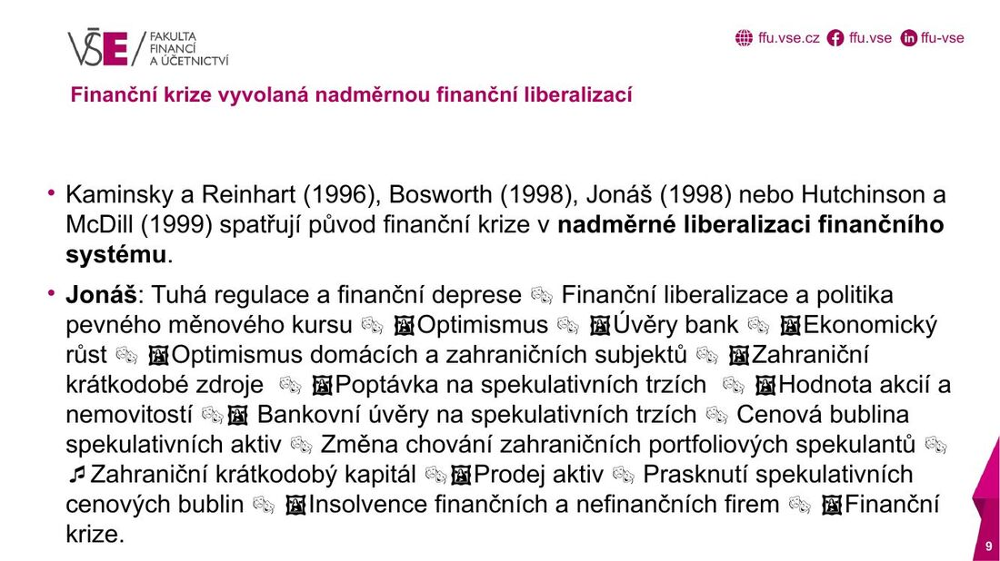
Náklady finančních (bankovních) krizí
Měří se dvojím způsobem (s. 16): restrukturalizační náklady (záchrana a sanace bank) versus kumulované ztráty ekonomického výstupu (HDP). Tabulka na s. 26 (Laeven a Valencia, MMF, 2010) uvádí ztrátu výstupu v % HDP za celé období krize.

Globální finanční krize 2007–2009
Průběh (s. 19–20):
- 2007: krize subprime hypoték a problémy hedgeových fondů,
- 3/2008: záchrana Bear Stearns převzetím bankou JP Morgan,
- 9/2008: nucená správa a de facto zestátnění hypotečních agentur Freddie Mac a Fannie Mae,
- poté krach Lehman Brothers (jedna z největších investičních bank), šok pro světové trhy a propuknutí globální krize (doplněk: 15. 9. 2008).
Projevy odpovídají definici (s. 20): nedostatečná likvidita, rozsáhlá insolventnost institucí, růst volatility, pokles hodnoty aktiv a menší objem alokovaných úspor.
Příčiny globální krize (s. 21–23)
- nadměrná úvěrová expanze (s. 21): hypotéční úvěry domácnostem rostly 2002–2005 o 13–14 % ročně (2003: 14,2 %), potom růst skončil a v 2008–2009 úvěry klesaly,
- nadměrná spekulace a pákový efekt domácností, finančních institucí i některých států,
- technologická akciová cenová bublina (TMT 2000),
- masivní sekundární sekuritizace včetně inovací (zejm. CDO, Collateralized Debt Obligations): sekuritizace hypoték amerických bank výrazně zvýšila informační asymetrii na globálních trzích,
- selhání pro-aktivního přístupu k regulaci.
Data k globální krizi


CDO a ručitelé (s. 24–25): nové emise CDO vzrostly z 157 mld. USD (2004) a 272 (2005) na 552 (2006), 503 (2007) a 168 za 1.–6./2008. Největší ručitelé emisí 2007: Citibank (41 mld. USD, 9,9 %), Merrill Lynch (38 mld., 9,2 %), Deutsche Bank (24 mld.), Wachovia (22), JP Morgan (20). Deset největších ručitelů pokrylo přibližně 232 mld. USD, tj. asi 56 % trhu.
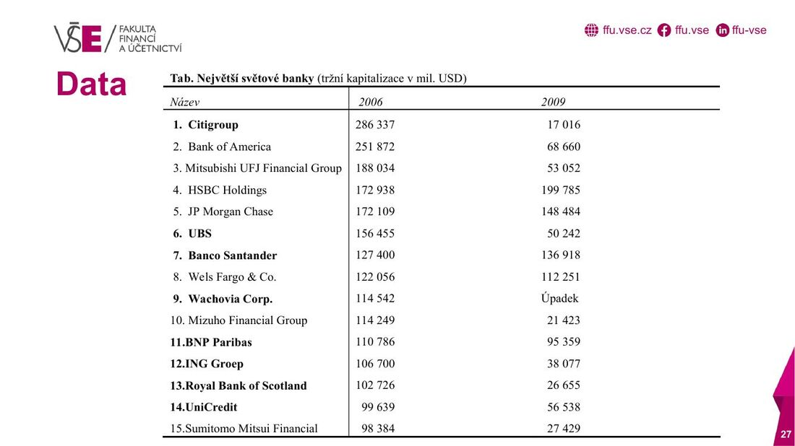
Odezva na krizi a regulace (doplněk, mimo slajdy)
Obsah přednášky uvádí „odezvu na krizi“, ale slajdy se jí nevěnují. doplněk (Musílek 2011, kap. 6; BCBS, Basel III, 2010):
- krátkodobě: snížení sazeb k nule, dodání likvidity, kvantitativní uvolňování (QE), záchrana institucí (bail-out: kapitálové injekce, záruky, znárodnění), fiskální stimuly,
- dlouhodobě: Basel III (víc kapitálu, pákový poměr, likviditní ukazatele LCR a NSFR), dohled nad systémovým rizikem, bail-in (ztráty nesou akcionáři a věřitelé banky), v USA Dodd-Frank Act (téma 12).
Jak poznat správnou odpověď v testu
- Pět znaků krize: likvidita, insolventnost institucí, volatilita, pokles hodnoty aktiv, nižší alokace úspor (s. 3). Druhy: úvěrová, likvidity, měnová, investiční.
- Minsky: opatrné → spekulativní → Ponziho; spekulativní refinancují jistinu, Ponziho nezvládnou ani úroky.
- Fisher, Minsky, Kindleberger = úvěrová expanze; Krugman = platební bilance; Dybvig a Diamond, Sachs = panika; Blanchard a Watson = bublina; Mishkin = selhání trhu (informační asymetrie); Dooley = kamarádský kapitalismus.
- Globální krize: sekuritizace a CDO zvýšily informační asymetrii; chybí globální regulátor a věřitel poslední instance.
- Finanční krize = zhoršení většiny finančních indikátorů (likvidita, insolventnost, volatilita, pokles aktiv, nižší úspory). Druhy: úvěrová, likvidity, měnová, investiční.
- Příčiny dle přednášky: úvěrová expanze, chybná makropolitika, liberalizace, panika, bublina, selhání trhu, přílev kapitálu, institucionální nedokonalost, cykly, skupina faktorů.
- Úvěrová expanze: Fisherův řetězec (předluženost, prodeje v tísni, pád cen a kapitálu bank) a Minsky (opatrné, spekulativní, Ponziho financování).
- Náklady krizí: restrukturalizační náklady a kumulované ztráty HDP (např. Irsko 110 %, Thajsko 109 %, USA 2007 25 %).
- Globální krize: bublina na nemovitostech, úvěrová expanze, páka, masivní sekuritizace (CDO), selhání regulace; Bear Stearns 3/2008, Freddie a Fannie 9/2008, Lehman.
- Podle Musílka krize odhalila neexistenci globálního regulátoru a věřitele poslední instance, regulatorní a daňový dumping.
11. Mezinárodní investování a reálná aktiva
Přednáška 10. 12. (odhad; odevzdání projektu) · P. Musílek · zdroj: Mezinárodní investování (1BP404_11_prednaska.pptx, čísla slajdů v závorkách)
Riziko a jeho diverzifikace
- Základem je CAPM: celkové riziko = jedinečné (JR) + systematické (SR). Jedinečné se dá diverzifikovat i doma, systematické zahraničím (s. 3).
- B. Solnik je zakladatel teorie mezinárodního investování (s. 3). Zahraniční trhy nejsou dokonale korelované, a proto mezinárodní portfolio snižuje riziko.
- Rizika navíc (s. 3): devizové, riziko země, daňové, riziko neefektivnosti trhu a riziko nepoctivých praktik.
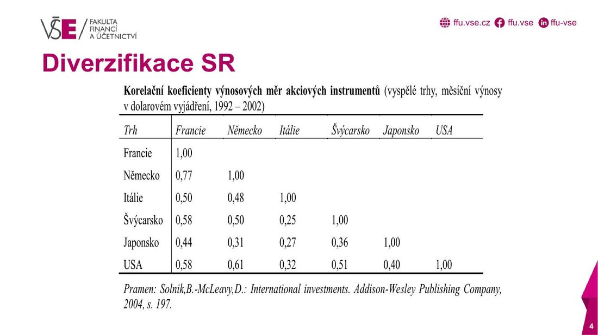
Rozvíjející se trhy (EM, 1985–1996): korelace s ostatními trhy je skoro nulová: Argentina −0,06, Brazílie 0,12, Chile 0,11, Indie −0,15, Indonésie 0,11, Jordánsko 0,11 (s. 5). Diverzifikační přínos je tu největší.
- $\rho = 1$: $\sigma_p = 20\,\%$ (žádný efekt).
- $\rho = 0{,}58$ (Francie–USA): $20 \cdot \sqrt{0{,}79} = $ 17,8 %.
- $\rho = 0{,}25$ (Itálie–Švýcarsko): $20 \cdot \sqrt{0{,}625} = $ 15,8 %.
- $\rho = -0{,}06$ (typické EM): $20 \cdot \sqrt{0{,}47} = $ 13,7 %.
Selhávání diverzifikace
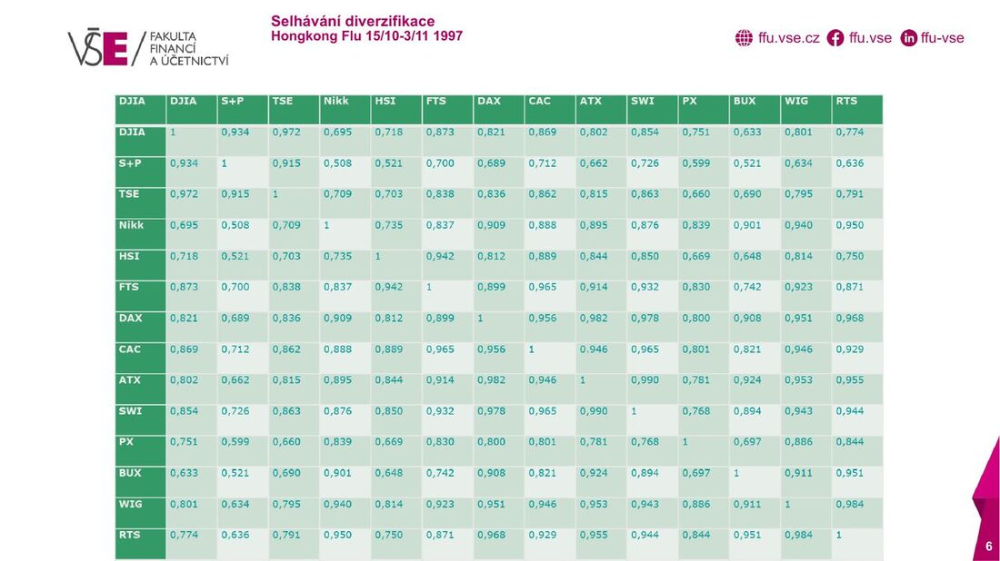
Teorie mezinárodního investování a globalizace
Globalizace investičních trhů má tři hlavní příčiny (s. 8):
- Systémová deregulace od 2. poloviny 80. let. Má dvě části:
- deregulace investičních trhů: zrušení devizových kontrol, zvláštních daní pro cizince, otevření emisí zahraničním emitentům a prostředníkům. Ve vyspělých zemích začala londýnským „velkým třeskem“ 1986 (s. 9),
- institucionální deregulace: odstranění omezení činností bank a investičních prostředníků a liberalizace investičních politik institucionálních investorů (s. 10).
- Boom technologií: elektronické obchodní systémy propojují prostředníky celého světa, zpracují příkaz za mikrosekundy a informace o cenách jdou v reálném čase (s. 11).
- Expanze institucionálních investorů v 90. letech: penzijní, pojišťovny, banky, investiční, podílové a hedgeové fondy. Individuální investoři využívají jejich služeb (s. 12).

Sektory (s. 14): průměrná korelace s globálním trhem je 0,80 (20 let), 0,81 (10 let) a 0,88 (5 let). Nejpropojenější je průmysl (0,95), nejméně energetika (0,67), péče o zdraví (0,69) a služby (0,70).
Metody mezinárodního investování
- Stvrzenky ADR a GDR: ADR (American Depositary Receipt) vydává americká banka na zahraniční akcie a obchoduje se s ním v USD v USA. GDR je obdoba na více trzích (s. 16).
- ETF a indexované fondy: pasivní, levná a široká diverzifikace.
- Aktivně spravované fondy: manažer vybírá trhy a tituly, vyšší poplatky.
- Investiční certifikáty a zahraniční investiční instrumenty (přímý nákup titulů v zahraničí).
- Akcie multinacionálních firem: nepřímá expozice vůči zahraničí, slabší diverzifikace než přímá investice.
- Hodnota v Kč = 4 400 · 22 = 96 800 Kč.
- $(1+r_{CZK}) = (1+r_{USD})\cdot\frac{22}{25} = 1{,}10 \cdot 0{,}88 = 0{,}968$, tedy −3,2 %, přestože v USD akcie vydělaly 10 %.
Reálná aktiva
- Motivy (s. 17): hedging proti inflaci, diverzifikace rizika, zajištění proti strachu, umělecké zážitky.
- Omezení (s. 17): nelikvidní a neefektivní trhy, dodatečné náklady.
- Inflace (USA, 1960–88, s. 18): korelace výnosu s inflací je u nemovitostí 0,85 a u zlata 0,63, tedy chrání proti inflaci.
- Diverzifikace (USA, 80. léta, s. 19): korelace nemovitostí s S&P 500 i s dlouhými podnikovými dluhopisy je −0,06, tedy skoro nulová.
- Nefinanční investování (s. 20): tradiční příležitosti jsou zemědělské plodiny, drahé kovy, umělecké sbírky a nemovitosti. Seznam „nových příležitostí“ je na slajdu prázdný (doplňuje se na přednášce).
Investování do zlata
- Postavení zlata (s. 22): bimetalismus → zlatý monometalismus (1816 Anglie, po 1870 Německo, Švýcarsko, Francie, Belgie) → standard zlaté mince (Hume: volný oběh mincí, směnitelnost papírových peněz za zlato, volná ražba, volný pohyb zlata mezi zeměmi).
- Demonetizace zlata: neplnohodnotné mince, standard zlatého slitku, po Velké hospodářské krizi zrušení směnitelnosti bankovek (dolar 1934, koruna 1936), standard zlaté dolarové devizy (1971), postupná změna struktury devizových rezerv.

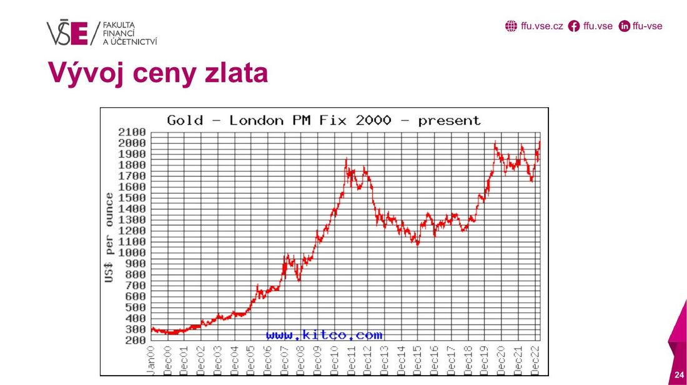
Trh zlata
| Poptávka (průměr 2004–08, s. 27) | t | Nabídka | t |
|---|---|---|---|
| Klenotnictví | 2 436 (68 %) | Těžba | 2 209 (60 %) |
| Investice | 493 | Detezaurace (prodej starých zásob) | 1 016 (28 %) |
| Průmysl | 670 | Centrální banky | 447 (12 %) |
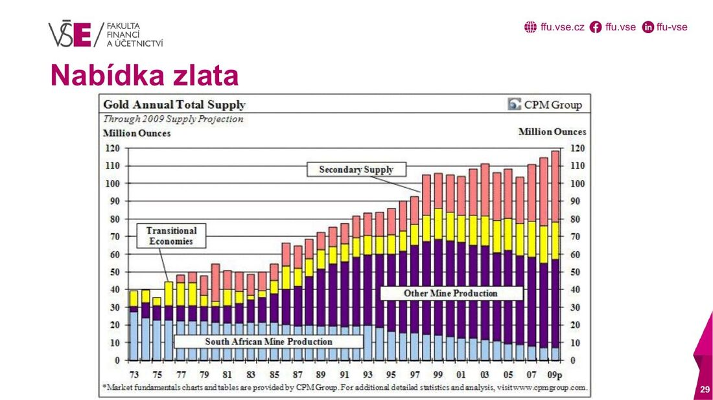
- Zásoby (s. 30): vytěženo 163 000 t (2008), nevytěžených odhadem 22 000 t, těžební náklady asi 250 USD/oz. Z vytěženého je 51 % v klenotech, 18 % ve veřejném sektoru, 17 % v investicích a 12 % v průmyslu.
Metody investování do zlata
- Zlaté pruty (Londýn, Curych; s. 31–34, např. tola bar), ETF, deriváty na zlato, zlaté dluhopisy.
- Zlaté mince (s. 35–40): tezaurační (Krugerrand, Maple Leaf, Červoněc, Panda), cena se řídí cenou zlata. Numismatické (Sovereign, Double Eagle), cena zahrnuje sběratelskou hodnotu.
- Akcie zlatých dolů (s. 41–43): na slajdech jsou za 1 rok nejlepší akcie +200 % a nejhorší −99,9 %, tedy extrémní volatilita. Cenu ovlivňují cena zlata, množství zásob, těžební náklady, regulace těžby, ekonomické a politické riziko.
Umělecké sbírky a nemovitosti
- Umělecké sbírky (s. 44–45): aukce, sběratelské knihy, keramika, obrazy, poštovní známky.
- Nemovitostní investování (s. 46) ukazuje indexy cen nemovitostí v USA.
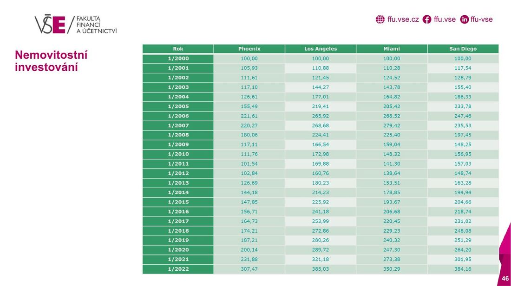
- Phoenix: 1/2006 = 221,65, 1/2011 = 101,54. Pokles $= 101{,}54/221{,}65 - 1 = $ −54,2 %.
- Průměrný roční růst 2000–2022 (22 let): $(307{,}47/100)^{1/22} - 1 = $ 5,2 % (Los Angeles 6,3 %, Miami 5,9 %, San Diego 6,3 %).
- Nemovitosti tedy za 22 let dobře vydělaly, ale v krizi je potkal hluboký propad (neplatí „nemovitosti nikdy neklesají“).
- Mezinárodní investování diverzifikuje systematické riziko (Solnik). Vyspělé trhy mají korelaci 0,25 až 0,77, EM kolem nuly. Přidává rizika devizové, země, daňové, neefektivnosti a nepoctivých praktik.
- V krizi korelace vzrostou (Hongkong flu 1997), takže diverzifikace selhává.
- Globalizace: deregulace (investičních trhů a institucionální, Londýn 1986), technologie, institucionální investoři. Korelace s globálním trhem roste (průměr 0,87 → 0,95).
- Metody: ADR/GDR, ETF, indexované a aktivní fondy, certifikáty, zahraniční instrumenty, multinacionální firmy.
- Reálná aktiva: motivy inflace, diverzifikace, strach, zážitky. Omezení: nelikvidita, neefektivita, náklady. Korelace s inflací: nemovitosti 0,85, zlato 0,63.
- Zlato: od zlatého standardu k demonetizaci, nabídka 60 % těžba, poptávka hlavně klenotnictví. Metody: pruty, ETF, deriváty, dluhopisy, mince (tezaurační × numismatické), akcie dolů.
12. Investiční bankovnictví
Přednáška 17. 12. (odhad, spolu s tématem 13) · P. Musílek · zdroj: Investiční bankovnictví (1BP404_12_prednaska.pptx, s. 1–73)
Vymezení investičního bankovnictví

Chování bank před krizí, VaR a casino banking
- Před pádem Lehman Brothers se stíraly rozdíly mezi komerčními bankami a investičními prostředníky: banky expandovaly na investiční trhy za nadprůměrnými výnosy a s moderním risk managementem (s. 5).
- VaR (Value-at-Risk) poprvé v bankovnictví použila JPMorgan v roce 1994. Měří ztrátu z úrokových, měnových, akciových nebo komoditních rizik za dané období s předem danou pravděpodobností (s. 6).
- Omezení VaR (s. 7–8): nedává nejvyšší možnou ztrátu a podceňuje extrémní šoky; zanedbává systémové riziko; předpokládá normální rozdělení; je procyklický (podobná data vedou ke stádnímu chování); spoléhá na opakování minulosti.
- Casino banking: banky s vklady od averzních střadatelů se plíživě změnily na de facto hedgeové fondy s pákou a nízkým kapitálem. Úspěch jim podle přednášejícího dal spíš dlouhý růst trhů 1985–2008 než risk management (s. 9–10).
Modely začlenění investičního bankovnictví
Čtyři modely (s. 12, 45): univerzální bankovnictví, striktní oddělení investičního a komerčního bankovnictví, holdingová společnost a dceřiná společnost. Oddělené bankovnictví může vzniknout tržně, nebo jako důsledek regulace (s. 33); stejné členění platí pro model dceřiné společnosti (s. 45).
Obchodník s cennými papíry (OCP)
- OCP je a.s. nebo s.r.o. s povolením ČNB. Minimální vlastní kapitál: dealer 730 tis. EUR, broker 125 tis. EUR, přijímání a předávání pokynů 50 tis. EUR (s. 14). Platí pro něj kapitálová přiměřenost podobně jako pro banky (s. 18).
- Hlavní služby (s. 15): přijímání a předávání pokynů (zprostředkování), provádění pokynů na účet zákazníka (brokerské obchody), obchodování na vlastní účet (dealerské), obhospodařování majetku, investiční poradenství, provozování MTF, emisní obchody.
- Doplňkové služby (s. 16): správa a úschova, investiční doporučení a analýzy, úvěry na obchod, administrace fondů.
- Po implementaci MiFID byl v ČR zrušen institut makléře. OCP musí zajistit, aby jeho lidé byli důvěryhodní a měli znalosti a zkušenosti, které prokazují doklady (s. 17).
MiFID a MiFID 2 / MiFIR 2
Cíl (s. 22): harmonizace ochrany investorů, snazší přeshraniční poskytování služeb, větší konkurence a nižší náklady, transparentnost cen a provizí, jednotný evropský kapitálový trh.
| Oblast | Co MiFID přinesla (s. 23–28) |
|---|---|
| A. Rozsah služeb | do investičních nástrojů přibyly komoditní a exotické deriváty; mezi hlavní služby investiční poradenství a provozování mnohostranného obchodního systému (MTF) |
| B. Způsob obchodování | kategorizace klientů, testování klientů, best execution |
| C. Organizace | přísné požadavky na interní audit, compliance, řízení rizik; podmínky outsourcingu |
| D. Trhy a transparentnost | cenová transparentnost před obchodem i po něm; regulované trhy, MTF, systematická internalizace |
Best execution (s. 26): provést pokyn co nejlépe, zohlednit cenu, transakční náklady a rychlost.
MiFID 2 a MiFIR 2 (s. 29–31)
- Post-lehmanovská novelizace. Nový typ obchodního místa OTF (organizovaný obchodní systém); pravidla před- a po-obchodní transparentnosti pro dluhopisy a deriváty; dohled nad komoditními deriváty a emisními povolenkami.
- Akciové obchody s akciemi z regulovaného trhu musí probíhat v regulovaných obchodních systémech; přísnější pravidla pro správu majetku, poradenství a komplexní produkty (PRIPs); přísnější vysokofrekvenční a algoritmické obchodování (informační povinnost, řízení rizik).
- Regulace informačních služeb: APA, ARM, CTP (publikace obchodů, hlášení, konsolidovaná data).
EMIR (nařízení EP a Rady č. 648/2012; v platnosti od března 2013, s. 32): vybrané OTC deriváty se musí vypořádat přes centrální protistranu a obchody se hlásí do registrů obchodních údajů.
Oddělené bankovnictví: Glass-Steagall a GLBA
Cíle GSA (s. 36): obnovit důvěru v komerční bankovnictví, zabránit toku peněz do spekulací, eliminovat konflikty zájmů, omezit moc bank.
Eroze GSA (s. 37): v 80. a 90. letech směly komerční banky dělat další obchody s cennými papíry (komerční papíry, hypoteční listy, poradenství, makléřství) a Fed povolil bankovním holdingům vlastnit investiční firmy jako dceřiné společnosti.
Japonská verze GSA (čl. 65 zákona o cenných papírech a burze, 1948; s. 42–44) byla mírnější: banky směly investovat do cenných papírů do 5 % jednoho emitenta a propojovat se s investičními firmami, ale nesměly dělat akciové makléřské obchody.
Dodd-Frank Act (2010, s. 41) měl podpořit finanční stabilitu (transparentnost Wall Streetu), chránit daňové poplatníky před náklady na záchranu bank, chránit spotřebitele a omezit stínové bankovnictví. K tomu patří Volckerovo pravidlo.
Volckerovo pravidlo
- Výjimky (s. 51): ručitelské obchody a market making (do výše předpokládané krátkodobé poptávky klientů), hedging doložený analýzami, americké vládní a municipální dluhopisy, obchody v zahraničí, brokerské, agentské a depotní obchody.
- Výjimky neplatí, pokud má banka konflikt zájmů, výraznou expozici v rizikových aktivech, nebo by expozice ohrozila stabilitu amerického systému (s. 52).
- Prováděcí předpisy vyšly v prosinci 2013; platnost od 1. 4. 2014, u velkých bank od 21. 7. 2015, pak další posuny (s. 50, 52).
Vickersovo pravidlo a další evropské verze
Netýká se zajišťovacích transakcí, ručitelských obchodů, obchodů s centrální bankou, sekuritizací a jednoduchých derivátů. Dopadá jen na velké banky (HSBC, Barclays, RBS, Lloyds, Santander UK), ne na banky s aktivy do 25 mld. GBP, stavební spořitelny a pojišťovny. Plná implementace do 2019 (s. 55).
| Země / orgán | Řešení (s. 56–61) |
|---|---|
| Francie (2013) | spekulativní obchody velkých bank na vlastní účet přesunout do specializovaných dceřiných společností, mnoho výjimek (market making, hedging); od července 2015 |
| Německo (2013) | velké banky vyčlení vlastní obchody, HFT a úvěrově-garanční obchody s AIF do samostatné instituce |
| Liikanenova zpráva (EU, 2012) | povinné oddělení obchodování na vlastní účet a dalších vysoce rizikových činností do samostatného subjektu v rámci skupiny, jen u bank s významným podílem rizikových obchodů |
| Návrh nařízení EK (1/2014) | kombinace Volckera a Vickerse: zákaz obchodování na vlastní účet a investic do AIF; dohled může nařídit vyčlenit market making, sekuritizace a deriváty. Platí pro největší banky a pro banky, které 3 roky po sobě překračují aktiva 30 mld. EUR a obchodní aktiva a závazky 70 mld. EUR nebo 10 % aktiv. Zákaz se netýká market makingu, peněžního trhu a vládních dluhopisů |
Doplněk (zdroj: Evropská komise, 2018): návrh nařízení Komise v roce 2018 stáhla; slajd 61 jen uvádí, že se implementace zkomplikovala.
Investiční obchody: emise, margin trading, short selling
Slajd 63 vyjmenovává: emisní obchody (vlastní × cizí emise; komisionářské × ručitelské; veřejné × soukromé), obchodování (margin trading, short selling), depotní obchody, majetkovou správu (agent × trustee), investiční a kapitálové poradenství.
Margin trading (s. 64–70)
Nákup akcií částečně na dluh. Marže = podíl vlastních prostředků na hodnotě investice. Páka zvyšuje zisk i ztrátu v poměru k vloženým prostředkům. Výpůjční náklady se zanedbávají.
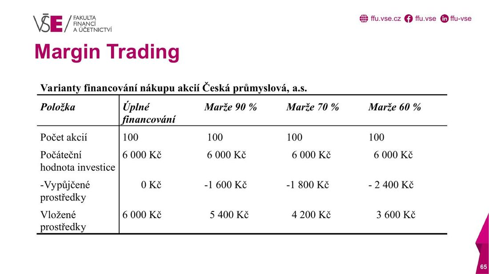
| Úplné fin. | Marže 90 % | Marže 70 % | Marže 60 % | |
|---|---|---|---|---|
| Vložené prostředky | 6 000 | 5 400 | 4 200 | 3 600 |
| Růst na 70 Kč: zisk 1 000 Kč | 16,67 % | 18,52 % | 23,81 % | 27,78 % |
| Pokles na 40 Kč: ztráta 2 000 Kč | −33,33 % | −37,04 % | −47,62 % | −55,56 % |

Short selling (s. 71–73)
Krátký prodej je prodej půjčených cenných papírů v očekávání poklesu ceny. Krátký prodej proti krabici (short against the box) je krátký prodej akcií, které investor zároveň drží v dlouhé pozici. Zisk je tak zafixován.
- Var. A, kurz 75 EUR: dlouhá pozice $7\,500 - 2\,000 = 5\,500$, krátká pozice $5\,000 - 7\,500 = -2\,500$, celkem 3 000 EUR.
- Var. B, kurz 35 EUR: dlouhá pozice $3\,500 - 2\,000 = 1\,500$, krátká pozice $5\,000 - 3\,500 = 1\,500$, celkem 3 000 EUR.

- Investiční prostředník: provize a kapitálové zisky, financování REPO; komerční banka: úroková marže, vklady. VaR je procyklický a podceňuje extrémy; casino banking = komerční banky jako hedgeové fondy.
- Modely: univerzální, striktní oddělení, holdingová společnost, dceřiná společnost. OCP: povolení ČNB, makléř zrušen.
- MiFID: 4 kategorie klientů, test vhodnosti (poradenství, správa; bez informací nesmí) × přiměřenosti (jen upozornění), best execution; MiFID 2: OTF, transparentnost, HFT; EMIR: OTC deriváty přes CCP.
- Glass-Steagall 1933 → eroze → GLBA 1999 (finanční holding). Volcker (sekce 619 DFA): zákaz krátkodobého obchodování na vlastní účet, fondy max. 3 % Tier I a 3 % fondu.
- Vickers: ring-fencing retailu uvnitř skupiny, banky nad 25 mld. GBP, do 2019. Liikanen 2012, návrh EK 2014 (stažen 2018).
- Margin trading: rentabilita = zisk / vložené prostředky, páka zesiluje zisk i ztrátu. Short against the box zafixuje zisk.
13. Sekundární trhy
Přednáška 17. 12. (odhad, spolu s tématem 12) · P. Musílek · zdroj: Sekundární trhy (1BP404_13_prednaska.pptx, čísla slajdů v závorkách); doplňky z Musílek (2011) a obecné literatury jsou označeny
Burza, burzovní trh a transformace burz
- Demutualizace: burzy se mění ze spolků (veřejné, privátní, bankovní burzy) na akciové společnosti a samy provádějí IPO. Akcie burz se obchodují na burzách samotných (NYSE, Nasdaq, LSE, Deutsche Börse, Euronext, Hong Kong, Singapur aj.; s. 5).
- Z neziskového spolku, který poskytuje technické podmínky obchodování, se stává ziskově orientovaná firma s diverzifikovanými službami, která maximalizuje cenu svých akcií, přebírá konkurenční burzy a rozvíjí burzovní IT (s. 6).
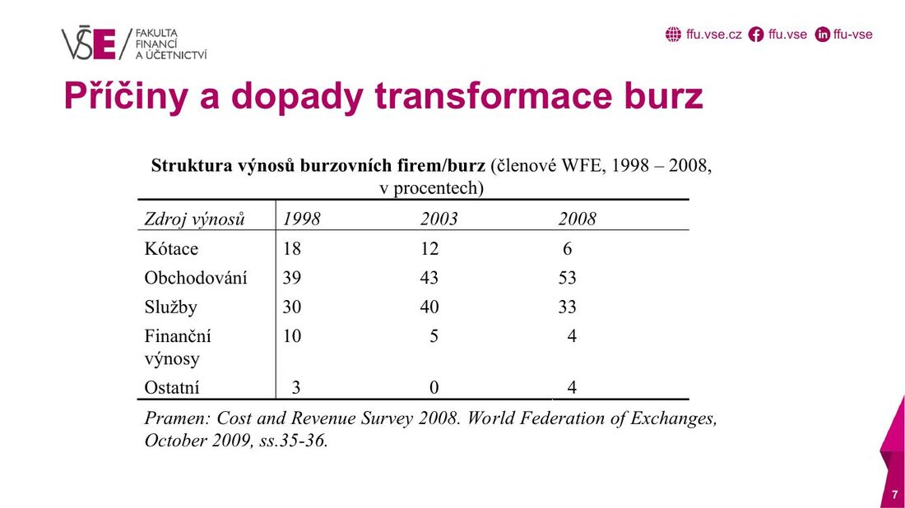
Srovnání burz a burzovních firem
Tabulky ze slajdů 8–11 (stav 2016, WFE) ukazují řády: podle tržní kapitalizace vede NYSE Group (19 573 mld. USD) před Nasdaq (8 979), Japan Exchange Group (4 955) a Šanghají (4 091); Euronext a LSE mají kolem 3 450 mld. USD. Podle objemu obchodů je pořadí jiné (Nasdaq 11 071, Šanghaj 7 510, Šen-čen 11 613, BATS 13 683 mld. USD), protože kapitalizace a likvidita nejsou totéž. Nejvíc kótovaných domácích firem má Bombajská burza (5 820), před Tokiem (3 535) a Madridem (3 480); Euronext jen 936 (s. 8–11).
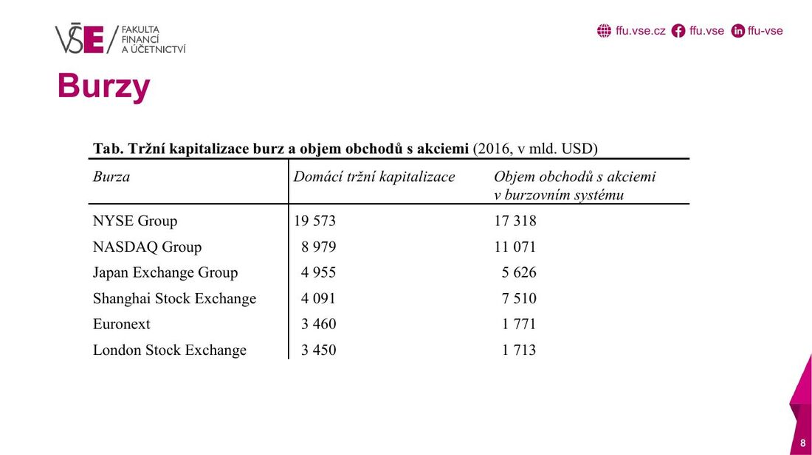
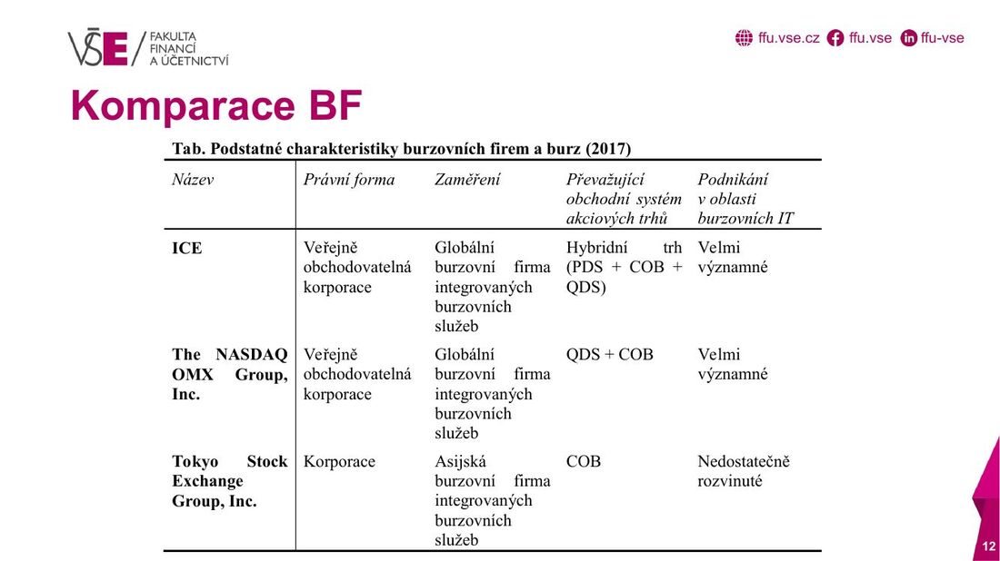
Burzovní IT je pro Deutsche Börse „mimořádně významné“, pro ICE, Nasdaq OMX a LSE „velmi významné“, u Tokia a Šanghaje nerozvinuté (s. 12–13). Doplněk (Musílek 2011, obecná literatura): trend k nadnárodním skupinám a přesunu zisku do dat, clearingu a technologií.
Fragmentace sekundárních obchodů

$17{,}5 + 7{,}9 = 25{,}4\ \%$. Kontrola součtu celé tabulky: $27{,}9 + 22{,}7 + 17{,}5 + 9{,}8 + 9{,}5 + 7{,}9 + 3{,}7 + 1{,}0 = 100{,}0\ \%$ (s. 14).
Dark pools (temná seskupení) jsou systémy bez zveřejnění pokynů před obchodem. Doplněk (obecná literatura): chrání velké pokyny před pohybem ceny, ale snižují transparentnost; v EU patří mezi alternativy k regulovanému trhu také MTF (alternativní platforma, kterou smí provozovat i obchodník s cennými papíry, mírnější pravidla pro emitenty) a OTF (od MiFID II, jen dluhopisy, deriváty a povolenky, ne akcie).
Vysokofrekvenční obchodování (HFT)
- Elektronický market making: protože většina burz přešla na centrální knihy pokynů, převzalo HFT roli tvůrců trhu z parketu. Dodává likviditu při minimálních spreadech a vyplatí se jen při obrovských objemech (s. 16).
- Arbitráž na fragmentovaných trzích: využívá cenové diskrepance mezi platformami (s. 17).
- Statistická arbitráž: sází na předvídatelné korelační vztahy mezi instrumenty nebo trhy při určitých událostech (s. 17).
Doplněk (obecná literatura): rychlost zajišťuje co-location serverů u burzy; rizika jsou „fantomová“ likvidita v krizi a bleskové propady (flash crash 6. 5. 2010); MiFID II vyžaduje testování algoritmů a pojistky.
Burzovní systém
Slajd 18 jen vyjmenovává prvky: burzovní publikum, příkazy, předmět obchodů, standardizace množství, obchodní systém (prezenční: ODS, PDS, aukce; elektronický: QDS, COB, aukce, kombinovaný; hybridní), druhy obchodů (promptní × termínové), vypořádání a burzovní informace.
Burza cenných papírů Praha (BCPP)
- Vlastnictví: dříve banky a obchodníci; od 8. 12. 2008 rozhodující akcionář Wiener Börse (92,74 %), od 2010 přes holding CEESEG AG (Wiener Börse 100 %, Ljubljana 81,01 %, Budapešť 50,45 %, BCPP 92,74 %). Management CEESEG = management Wiener Börse. Cíle: zavést systém XETRA (Lublaň 2010, Budapešť a BCPP 2011), akvizice členů, harmonizace pravidel a vypořádání (s. 20–21).
- Členský princip: obchodovat smějí členové, ze zákona o podnikání na kapitálovém trhu také ČNB a MF ČR. O přijetí rozhoduje vedení burzy na doporučení burzovního výboru pro členské otázky. Člen jedná vlastním jménem přes svého zaměstnance a musí být členem Garančního fondu burzy (GFB) (s. 22).
- Pokles aktivity: členů 17 (začátek) → 106 (1996) → 16 (2017); akciových emisí 1028 (1994) → 25 (2016) (s. 23–25).
- Investiční certifikáty (2011): 34 nepákových a 10 pákových emisí, warranty 24 emisí bez jediného obchodu (s. 26).
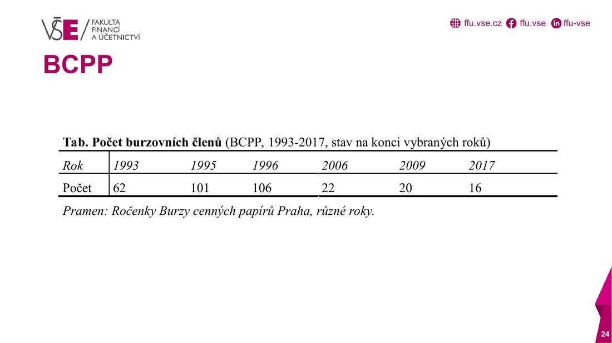
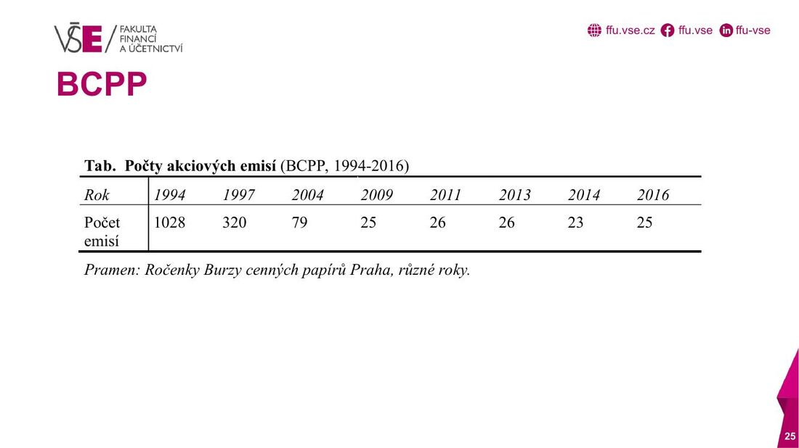
Členové: $106 \to 16$, tj. pokles o $\frac{106-16}{106} = 84{,}9\ \%$. Emise: $1028 \to 25$, tj. zbývá $\frac{25}{1028} = 2{,}4\ \%$ (s. 24–25). Doplněk (Musílek 2011): příčinou je dozvuk kupónové privatizace, kdy bylo kótováno tisíce titulů bez skutečného trhu.
PXE, CDCP a RM-Systém
- PXE (Power Exchange Central Europe, dceřiná firma BCPP): elektrická energie s dodáním v ČR, SR a Maďarsku, v eurech, 9:00–16:00, futures i spot, fyzické nebo finanční vypořádání; dozor MPO a ČNB; elektronický systém AOS; centrální protistranou je Central counterparty, a.s. (s. 27). Objem futures klesl z 2 441 mil. EUR (2008) na 1 171 (2010), spot jen 7,1 → 3,9 (s. 28).
- CDCP (Centrální depozitář cenných papírů): od 7. 7. 2010 po SCP. Provozuje vypořádací systém (burzovní i mimoburzovní obchody), centrální evidenci zaknihovaných CP, přiděluje ISIN, půjčuje CP, spravuje garanční prostředky, úschovu a vypořádání obchodů PXE (s. 30–31). Investoři, kteří nejsou účastníky, disponují účty jen přes účastníky (banky, obchodníci, MF, ČNB, RM-S) za poplatek (s. 32).
- RM-Systém: obchodování od 1993, původně zákaznický princip (přímý vstup všech registrovaných zákazníků, jednoduché podmínky; s. 33). Od 1. 12. 2009 mají přímý přístup jen licencovaní obchodníci a osoby splňující alespoň 2 ze 3 podmínek: majetek ve finančních nástrojích nad 1 mil. Kč, obchody min. 5 mil. Kč za 12 měsíců, min. 40 transakcí za 12 měsíců (s. 34). Přímí účastníci obchodují přes EasySys; drobní klienti přes zprostředkovatele (v praxi FIO) a pokyny EasyClick ve standardizovaných lotech, s tvůrci trhu pro likviditu (s. 35).

$\frac{154{,}74}{159{,}56} = 0{,}970 = 97{,}0\ \%$; RM-S $\frac{4{,}82}{159{,}56} = 3{,}0\ \%$. Sedí se slajdem 37.
Doplněk: inovace, offshore a současný český trh
Doplněk (Musílek 2011, obecná literatura; sylabus tyto pojmy uvádí, slajdy je neobsahují):
- REIT: burzovně obchodovaná nemovitostní společnost, která v USA vyplácí min. 90 % zisku jako dividendy a neplatí daň z příjmů firmy.
- SPAC: prázdná společnost, která na burze získá peníze a obvykle do 2 let převezme soukromou firmu; boom 2020–2021, pak útlum.
- Offshore centra: nízké daně, mírná regulace, utajení; tlak na transparentnost (FATCA 2010, CRS od 2017, globální minimální daň 15 %).
- Český trh dnes: BCPP (od 1993) má segmenty Prime, Standard, Start (2018) a Free Market; index PX je cenový (bez dividend); malý, koncentrovaný (ČEZ, banky) a nelikvidní.
- Burzy prošly demutualizací: ze spolků na ziskové akciové společnosti, které samy kotují akcie.
- Výnosy burz se přesouvají z kótace (18 → 6 %) k obchodování (39 → 53 %).
- Systémy: COB (kniha pokynů), QDS (kotace tvůrců trhu), PDS (aukce); ICE hybridní, ostatní většinou COB.
- Fragmentace: v USA 2010 jen 50,6 % přes NYSE a Nasdaq, 25,4 % banky a dark pools.
- HFT: krátká držba, velké objemy, malý zisk na obchod; elektronický market making, arbitráž, statistická arbitráž.
- BCPP: Wiener Börse 92,74 %, holding CEESEG, členský princip a GFB; počet členů i emisí prudce klesl.
- CDCP: evidence, vypořádání, ISIN. PXE: elektřina (futures, spot). RM-Systém: zákaznický princip omezen od 12/2009, role dnes malá.